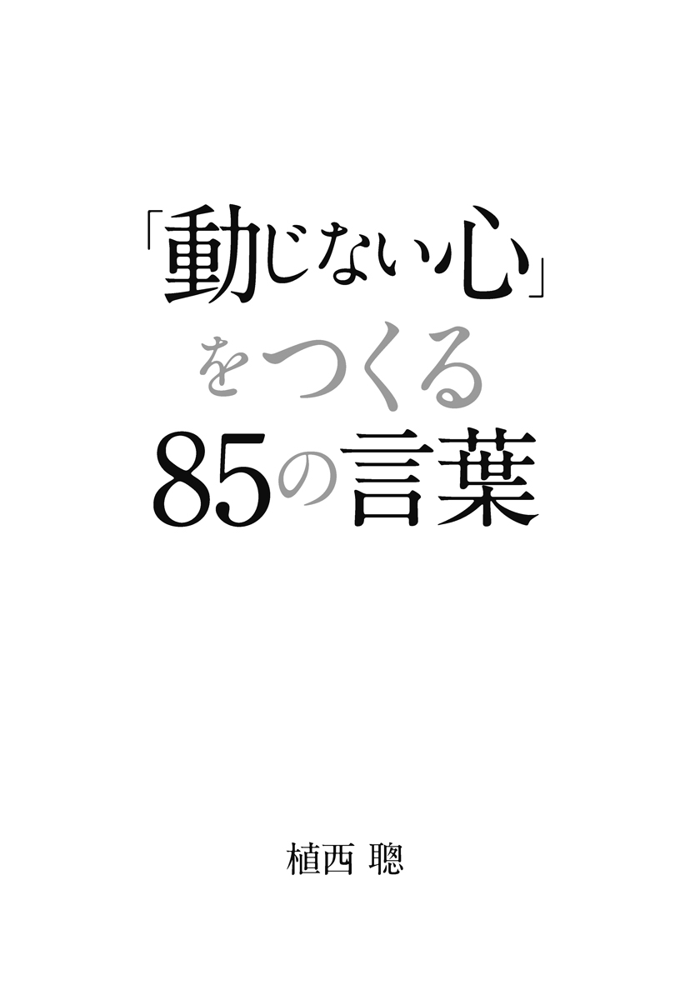
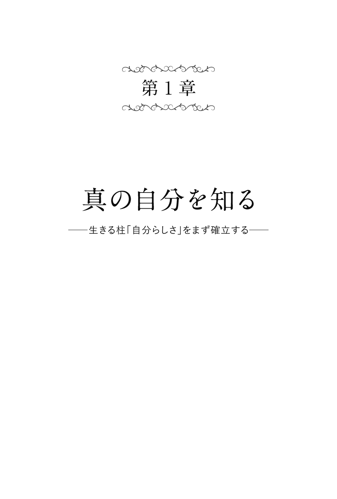
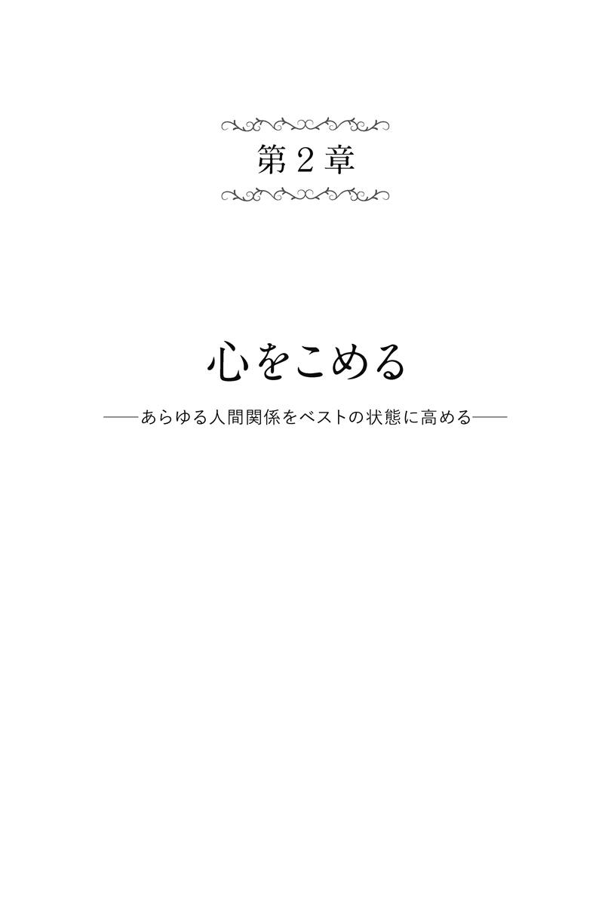
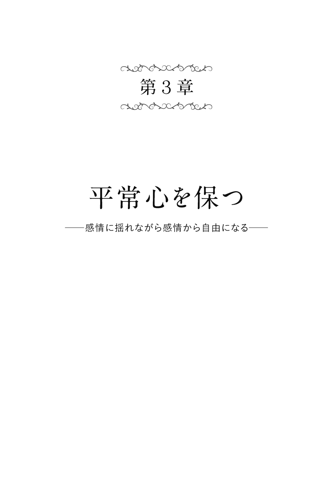
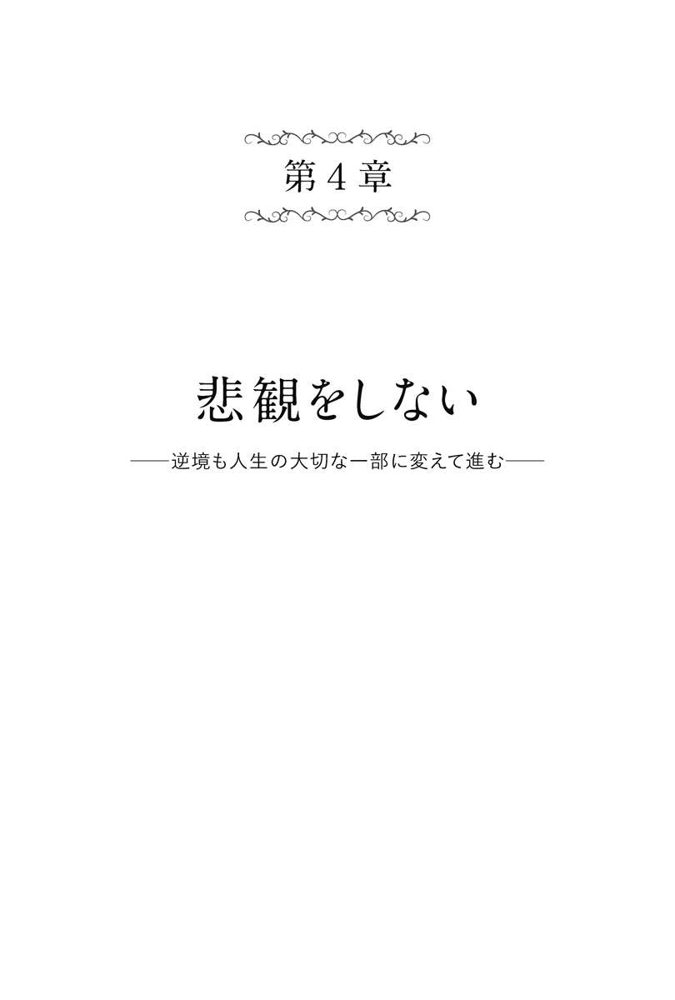
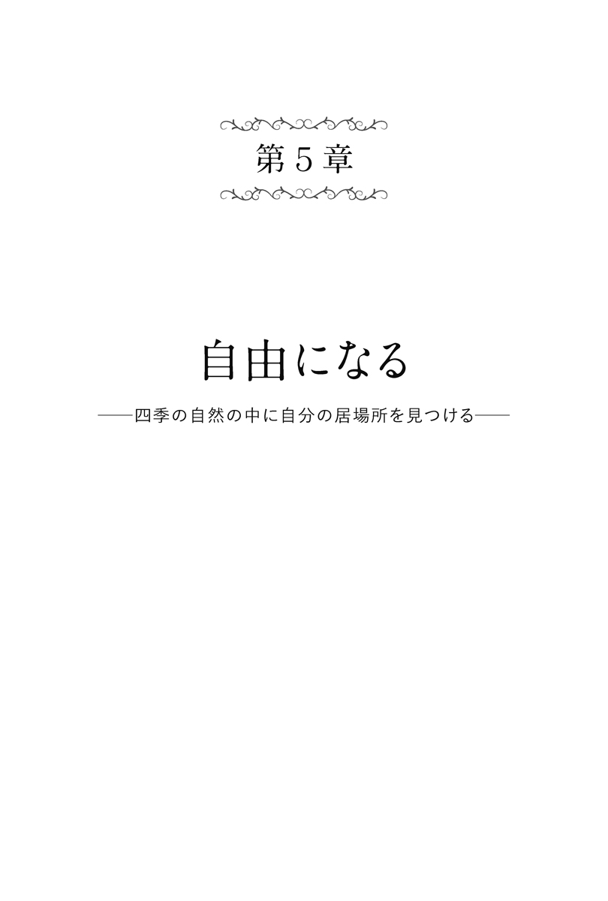
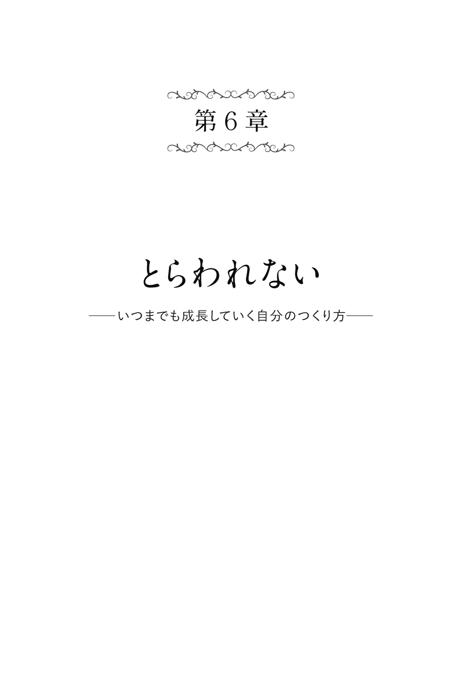
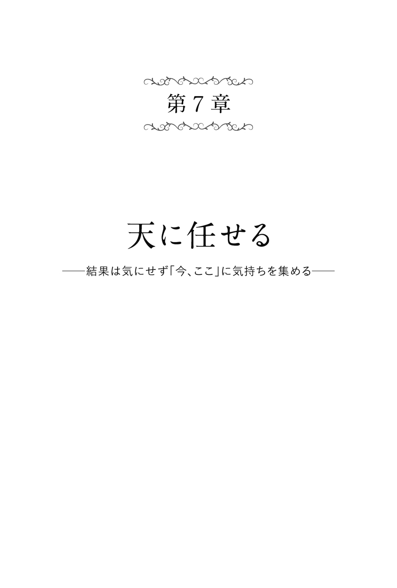
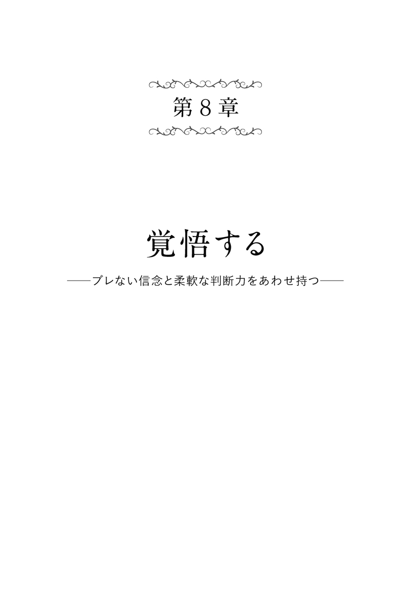
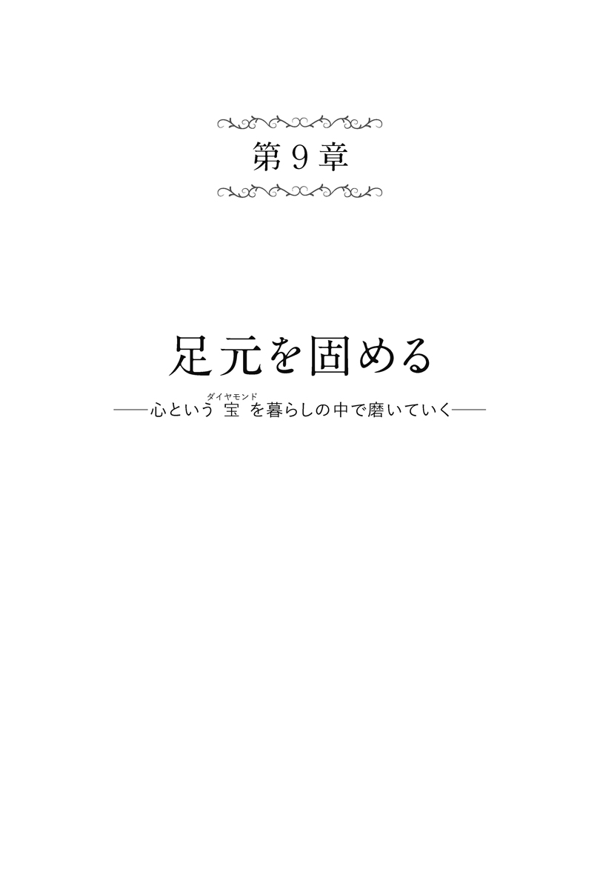

| 「動じない心」をつくる85の言葉 | |
| 植西聰 | |

まえがき
「
集中力が続かない。関係ないことばかり思い浮かべてしまう」
「
ささいなことで、すぐに気持ちが暗くなってしまう」
「
迷いが多く、物事を決められない」
「
われながら信念がないと思う。他人に左右されやすい」
「
つい調子に乗ったことをして、失敗する」
このような悩みを訴える人がたくさんいます。
ひとことに要約すると、「心が動じやすい」ということではないかと思います。
確かに私たちの心は、ちょっとした影響を受けて揺れ動きます。
心は石ではありません。心は生きています。
生きているからこそ、新たな刺激を求めたり、落ち込んだり、迷ったり、一人が怖くなったり、快楽に走ったりするのです。
しかし、その「動じやすい心」を上手にコントロールしていかなければ、幸福な人生を築けないのも事実だと思います。
心の動きのままに振り回されていては、こんな生活になってしまうでしょう。
「
自信が持てず、会社でも家でも意見が通らない」
「
会社に行きたくない日は、家で寝る」
「
イヤなことを放置しているため、不安で一杯だ」
「
時々、居留守を使う」
「
過去を思い出すたびに、恥ずかしさで身の置きどころがなくなる」
これでは幸福とは言えず、社会人としてもまっとうな生き方と言えないでしょう。
私たちが健全な社会人として充実した人生を築いていくためには、自分の心を上手にコントロールし、心の動揺をできるだけ少なくしていく能力が必要になってくると思います。
そこで本書では、動じない心をつくるヒントを数多く載せました。
参考にしたのは、「禅」の考え方です。
禅は修行を通して悟りを得ることを目的にしています。
「
悟り」とは、ごく簡単に言えば、「自分の中から乱れや迷いを取り除いて、何事にも動じない心を得ること」だと思います。
私たちが充実した人生を築くために必要なのも、動じない心をつくることです。
つまり、禅も社会人としての生き方も、目的は同じなのです。
したがって禅の考え方には、私たちの人生に参考になるものがたくさんあるのです。
禅の考え方が端的に表されているのは「禅語」です。
しかし、禅語には、むずかしい漢字で書かれたものや、理解しにくいたとえ話が少なくありません。
本書では、その禅語をわかりやすく現代的に意訳（時には超訳）して冒頭に掲載し、それを私なりに解説してあります。
本書が読者の幸せな人生に貢献できれば幸いです。
著者
「動じない心」 をつくる85 の言葉 もくじ
まえがき
第１章 真の自分を知る
─生きる柱「自分らしさ」をまず確立する─
＃01 「自分」という重荷を軽くする
＃02 オンリーワンこそがベストワン
＃03 もう一人の自分に出会う時
＃04 人に聞くより自分に問いかけよう
＃05 自分を「変えてしまう」必要は少しもない
＃06 最善の自己実現は無心になること
＃07 人と比べても自分はいつまでも見つからない
＃08 いい生き方とは自分に合った生き方
＃09 「私は一人」なのは「私だけ」なのとは違う
＃10 人生の答えは自分探しをやめるところから
第２章 心をこめる
─あらゆる人間関係をベストの状態に高める─
＃11 いい言葉がいい人間関係をつくる
＃12 心からの言葉はあらゆる人を揺さぶる
＃13 気持ちを共有する条件
＃14 言葉の裏の叫びを聞く
＃15 仲間があなたの「自力」を強くする
＃16 人間関係こそ大局観でとらえよう
＃17 自分を伝えるにはまず相手に合わせること
＃18 人間関係は決めつけないほうがうまくいく
＃19 「ベストを尽くそう」と決めれば好き嫌いは軽くなる
＃20 陰口は「影」にすぎない
第３章 平常心を保つ
─感情に揺れながら感情から自由になる─
＃21 目の前のことより心配事がそんなに大事か
＃22 好調な時こそ調子に乗りすぎないように注意する
＃23 心を惑わす要素は「隔離」せよ
＃24 心の揺れは判断の揺れにつながってしまう
＃25 人は「心の地獄」「心の極楽」の間を歩む
＃26 未来を重んじるのは「今」を重んじることではないのか
＃27 「思い出など妄想だ」と決めつけてみないか
＃28 死を考えすぎるのは人生をムダにすること
＃29 環境より心が生き方を左右する
第４章 悲観をしない
─逆境も人生の大切な一部に変えて進む─
＃30 何があっても平気で生きるのが禅
＃31 ジタバタしても何も変えられない
＃32 どんな時も心にいいイメージを保とう
＃33 道理が通らないのが世の中だ
＃34 苦しみをもたらす常識なら捨ててしまえ
＃35 過信はリスクを招く
＃36 つらいことが多いから楽しいことがより楽しい
＃37 最悪ならばあとはよくなるだけなのだ
＃38 困難は力量のものさし
＃39 逆境は「あり得ない力」を引き出す
第５章 自由になる
─四季の自然の中に自分の居場所を見つける─
＃40 「ふと休む」のが人生を楽しむコツ
＃41 自分がいかに幸せかに気づこう
＃42 シンプルライフは精神安定のクスリ
＃43 「無事に」は大事な価値観だ
＃44 「住めば都」は幸福な人の合言葉
＃45 自然は幸福の泉
＃46 変化を受け入れると心は静かになる
＃47 むなしさを知る時に本当の幸福がわかる
＃48 自由と行き当たりばったりを区別する
＃49 「ぶつかる」だけが問題解決法ではない
第６章 とらわれない
─いつまでも成長していく自分のつくり方─
＃50 必ずいい結果が出ると信じる
＃51 努力を続けることこそ大切な才能
＃52 ムダをムダと思わないのが努力である
＃53 「あきらめようか」を禁句にする
＃54 たとえばお茶を飲む時も集中力を養える
＃55 遠くまで行くには休み休み行くことだ
＃56 安易な人真似では成長は困難になる
＃57 考えるより行動するのが賢い生き方
＃58 一分の望みを追うのはいいがゼロを追うのは愚かである
＃59 やり抜く力は幻滅した時に試される
第７章 天に任せる
─結果は気にせず「今、ここ」に気持ちを集める─
＃60 物事のいい面だけをとらえる
＃61 自然の流れに逆らわない
＃62 「そうなる定めだったこと」まで反省するな
＃63 考えてもわからないことは考えない
＃64 「意味がない」とわかることも大きな進歩
＃65 天に任せるのは前進の一方法
＃66 世間を必要以上に気にしない
＃67 常識から「半歩」離れて判断する
＃68 見返りを求めずに生きる
第８章 覚悟する
─ブレない信念と柔軟な判断力をあわせ持つ─
＃69 欲を捨ててなお残る気持ちが信念だ
＃70 一人黙々と打ち込め
＃71 すぐに結果を出そうと思わない
＃72 なりきることで迷いが消える
＃73 「本当に大切なもの」を考え直す
＃74 自分の内面に学べ
＃75 柔軟なほうが迷わない
＃76 「絶対」がなくても迷わない
＃77 悪事をしないという自信は最強
＃78 信念を変えるな、やり方を変えよ
第９章 足元を固める
─心という宝ダイヤモンドを暮らしの中で磨いていく─
＃79 やるべきことを怠らずにやる
＃80 「ない」と嘆く人の多くは「見つけられない」だけ
＃81 心を整えるには体をまず整える
＃82 表情をチェックせよ
＃83 心を清潔にしておく
＃84 目の前の道をまっすぐに歩く
＃85 一つ一つのことに心をこめる
参考文献

＃01
どこででもあんたはあんた。
貫くのはむずかしいけど、
貫くことが人生だ。
随
処
に主
となれば
立
処
皆
真
なり
──臨 済 義 玄 の語録『臨済録』
自分で考え、自分で決め、自分で行動する、といったように、人生を主体的に生きていくことは、けっして簡単なことではありません。
自分がしたことの責任を自分で背負わなければなりませんから、苦労も多いのではないでしょうか。
その意味では、誰かに依存して、その人に命じられるままに生きていくほうが楽なようにも思えます。
しかし、依存的に生きることは、心の戸惑いを生む原因にもなりやすいようです。
自分で考え自分で決める必要はありませんから、精神的な負担が減る一方で、どこかで「自分がしたいことができない」という欲求不満が溜まっていくのです。
サラリーマンが上司に対して言うグチのほとんどは、この種類の不満ではないでしょうか。
欲求不満はイライラやストレスを生み出します。このイライラやストレスが過剰に溜まっていくと、怒りっぽくなったり、落ち込みやすくなったりしてきます。
冒頭の言葉は、依存的な生き方ではなく、主体的に生きていくことの大切さについて述べているように思います。
たとえ人から命じられることをやるにしても、そこに自分なりの創意工夫を入れていくことが大事
です。
主体的に生きることで生きる充実感が得られるのです。
■「自分」という重荷を軽くする
＃02
最高の悟りとは何ですか。
悟りに最高最低などない。
僧雲
門
に問う
「いかなるかこれ清
浄
法
身
」
門
いわく「花
薬
欄
」
──中国宋代の公案集『碧 巌 録 』
この言葉が言っているのは、「人に打ち勝って一番になるよりも、自分にしかできない個性的な生き方を実現することが大事だ」ということです。
つまり「ナンバーワンになるよりも、オンリーワンを目ざすのがいい」という意味です。
「
雲
門
」とは、多くの公
案
（悟りに導くヒントの言葉）を残した中国の禅僧、雲門文
偃
をさします。
冒頭の言葉にある「花
薬
欄
」とは、花
壇
の意味です。
花壇にはさまざまな種類の花が咲いています。しかし、花たちは、「どれが一番美しいか」を競い合っているわけではありません。「自分が一番美しい」ということを誇ってもいません。一つ一つの花が「自分らしく花を咲かせる」ことに精一杯になって生きているのです。
雲門は、「悟りも同じこと」と言っています。
つまり「悟りとは、他人とどちらの修行が進んでいるかを争うことではない。狭い寺の中で最もすぐれた人間になろうとあくせくすることでもない。自分らしい修行をし、自分にしか得られない悟りを見つけ出すこと
」という意味です。
ナンバーワンを目ざして人と争う生き方をしていると、競争心や嫉妬心から心が惑わされやすくなります。
オンリーワンの人生を目ざすことで、何事にも動じない心を持てると思います。
■オンリーワンこそがベストワン
＃03
もう一つの心が、心の底にある。
その心は喜怒哀楽に惑わず、
秋の月のように澄んでいる。
ただそれを言葉では伝えられないのだ。
わが心秋
月
に似たり
碧
潭
清うして皎
潔
たり
物の比
倫
に堪
うるなし
われをして如
何
が説かしめん
──中国唐代の詩作品『寒 山 詩 』
禅の言葉には、しばしば「自分の中に、もう一人の自分がいる」「心の底に、もう一つの心がある」という考え方が登場します。
「
もう一人の自分」「もう一つの心」に気づき、その「もう一人の自分」「もう一つの心」が命じる生き方に従うのが、悟りだと言われています。
冒頭の言葉は、その「もう一つの心」について述べられたものです。
ふだん人が意識している「心」は、喜んだり、怒ったり、悲しんだり、安心したりする心です。
しかし、そういった喜怒哀楽に惑わされない、もう一つの心があるのです。
その心は、秋の月のように清らかで、純粋なものなのです。
どんな悪人であろうとも、悩み多い人生を生きている人であろうとも、毎日をアクセク暮らしている人であろうとも、心の底には「清らかで純粋な心」を持っている、というのが禅の考え方です。
時々、心を静める時間をつくってみましょう。
そして、自分の中にあって、ふだんは意識していない、「清らかで純粋な心」を意識する機会をつくってみる
といいと思います。
それは自分の人生を見つめ直す、いい機会になるでしょう。
また、気持ちをリフレッシュするためにも役立つ時間になるに違いありません。
■もう一人の自分に出会う時
＃04
自分自身に
「おーい、主人公」と問いかけ、
自分自身で「はい」と答えていた。
瑞
巌
の彦
和
尚
自
ら主
人
公
と呼び
また自
ら応
諾
す
──中国宋代の公案集『無 門 関 』
禅には、「自分の中に、もう一人の自分がいる」という考え方があります。
「
もう一人の自分」は、ふだんは意識されていません。しかし、その「もう一人の自分」こそ、真の自分自身なのです。
また、正しい悟りを得た存在でもあります。
「
もう一人の自分」を、禅では「主人公」と呼んでいます。
「
主人公」という言葉は、「映画や小説の中心人物」という意味で一般的にも使われています。しかし、語源は禅にあるのです。
「自分自身の中に、正しい悟りを得た中心人物がいる。それが主人公だ」
と考えられているのです。
唐時代の中国に、瑞
巌
寺
という寺がありました。
その寺の彦
和
尚
は、毎日、自分自身に向かって、こう問答していたと言います。
「
おーい、私の主人公よ、私は間違った考え方をしているのではないだろうか」
「
おまえは間違っていない」
「
おーい主人公よ、私の修行は正しいのか」
「
今のままでよい」
自分で問いかけ、自分で答える、この「自問自答」が、冒頭の言葉です。
私たちも、心が乱れたり、迷いが生じた時には自問自答してみたらどうでしょうか。
心が静まり、問題が解決するかもしれません。
■人に聞くより自分に問いかけよう
＃05
その雑念が自分かね。
隠れた自分が見えないか。
雲 去って山 嶺 露 わる
──原典不明「性善説」
「
性
善
説
」「性
悪
説
」という言葉があります。
「
性善説」は、「人は生まれながらにしてよい存在である」と考えます。
逆に「性悪説」は、「人は生まれながらにして悪い存在である」と考えます。
たとえばキリスト教は、性悪説の傾向が強い宗教だと言われています。
「
人は本質的に悪い存在なので、悔い改めなければならない。反省してよい道を歩いていかなければならない」という考え方です。
一方で仏教は「性善説」の傾向が強いようです。「人は生まれながらにして、自分の中に純粋で清らかな心を持っている」と考えます。
この清らかな心を「仏
性
」と言います。
ただし、仏性は、ふだんはさまざまな雑念によっておおわれています。
「
お金儲けをしたい。そのためなら少しくらい悪いことをしてもいい」「有名になりたい。そしていばりたい」などといったことです。この雑念を取り払って、自分自身の中にある仏性の存在に気つくことが、仏教の目的
と言っていいでしょう。
冒頭の言葉にある「雲」とは「雑念」を意味します。「山
嶺
」とは「仏性」のことです。つまり、「雑念を払って仏性を明らかにする生き方をせよ」というのが、この言葉の意味です。
欲や雑念にとらわれている限り、仏性を発見することはできません。
生きるための参考になる言葉です。
■自分を「変えてしまう」必要は少しもない
＃06
花は誰かのために
咲いているのではありません。
百
華
春
至
って
誰
がためにか開く
──『碧巌録』
春になると野には美しい花々がいっせいに咲き出します。
この言葉は、「花は誰のために咲いているのか」と自問し、こう自答していると思います。
「
花が美しく咲くのは、誰のためにでもない。自然の法則にしたがって一生懸命に咲いているだけなのだ。だからこそ花は美しい」
言い換えれば、「人間も花が咲くように生きていくのがいい」と述べているのではないでしょうか。
誰かに気に入ってもらいたいと思って着飾ったり、誰かの関心を引きつけたいと思って偉そうなことを言っても、相手の心は動かせないでしょう。むしろ下
心
を見すかされ、見くびられてしまうのではないでしょうか。
他人からどう思われるかを気にするのではなく、自分がすべきことに無心で一生懸命に取り組んで生きている姿が、まわりの人たちに「あの人はがんばっている」という感動を与えると思います。
職場の上司に評価されたいと思ったり、好きな人にアピールしたいと考えた時も、無理をしてよく見せようと思うのは、逆効果になってしまうかもしれません。
「よく見せたい」という邪念は捨てて、一生懸命に生きる
ことです。その姿は、自然に相手に伝わり、よい印象につながると思います。
花も人間も無心になって生きている姿が美しいのでしょう。
■最善の自己実現は無心になること
＃07
空に太陽が一つしかないように、
この世に自分という人間は
一人しかいない。
宇宙に双
日
なく、
乾
坤
にただ一人
──中国宋代の仏教書『五 灯 会 元 』
この言葉が述べているのは、「自分を大切に、自分らしく、オンリーワンの存在として生きていくことの大切さ」だと思います。
人はまわりの人たちに心惑わされることがよくあります。
自分よりも恵まれた才能を持っている人がいれば、嫉妬心から心が乱されます。
自分よりも収入が多い人を見れば、「自分よりも楽をしていながら、なぜ収入は自分よりも多いのか」と腹立たしくなり、心が乱されることもあると思います。
しかし、そのように他人と自分とを比較して嫉妬したり、腹立たしく思っても、何一ついいことはありません。
ストレスが溜まっていくだけではないでしょうか。
ならば「他人は他人、自分は自分」と割り切って、他人のことは気にしないで、自分らしく生きていくほうが賢明だと思います。
この世に自分という人間は一人しかいません。
その事実を理解して、自分にしかできない生き方を目ざしていくほうがいいと思います。
冒頭の言葉も、そういう意味のことを表していると思います。
古代ギリシャの哲学者であるソクラテスは、「汝
自身を知れ」という言葉を残しました。この言葉も、「自分の個性を理解して、他人に惑わされることなく、自分らしく生きていく
ことが大切だ」と述べていると思います。
■人と比べて自分はいつまでも見つからない
＃08
背の高い人には、
背の高い人ならではの仏が宿っている。
背が低い人には、
背が低い人ならではの仏が宿っている。
長
者
は長
法
身
短
者
は短
法
身
──原典不明
この言葉が述べているのは、自分に合ったやり方を見つけることの大切さだと思います。
「
仏が宿っている」とは、「自分の本来の姿がある」「自分ならではのうまくいくやり方がある」といった意味に理解すればいいと思います。
たとえば、野球のピッチャーです。
ピッチングフォームは人それぞれです。
上から腕を投げ降ろすタイプの人も、横から腕を振って投げるタイプの人もいます。
スピードのある直球で勝負する人も、変化球を多投する人もいます。
成功する人は、その人なりのうまくいくピッチングで、成績を残しているのです。
大切なのは、そんな「自分に合ったやり方」を早く見つけ出すことでしょう。
本来は上から腕を投げ降ろしてこそ力を発揮するタイプの人が、横から腕を振って投げても、いい結果を残すことはできないでしょう。
生き方もそれと同じです。
自分に合った生き方を早く見つけ出し、それが見つかったら動じないでその生き方を貫いていくことが、充実した人生をもたらすと思います。
まずは、自分に合ったやり方を見つけることです。
自分に合ったやり方さえ見つければ、それを貫いても、世間もけなしようがなくなる
ので、人生を楽に生きることができるでしょう。
■いい生き方とは自分に合った生き方
＃09
月は夜空に一つしかないが、
あらゆる水の上に月影が映っている。
一
月
天にありて
影は衆
水
に印
す
──圜 悟 克 勤 の語録『圜悟語録』
夜空に月は一つしかありません。
しかし、月の姿は、地上の水たまりや池や、湖や川の流れなど、あらゆる水の面に映し出されています。
冒頭の言葉は、その情景を表しています。
この言葉は、月を仏にたとえているのです。
つまり、「仏は一人しかいません。しかし地上のあらゆる人間の心には仏の姿が映し出されているのです」という意味を表しています。
人の心に映し出された仏の姿が「仏性」です。
「
仏性」を、「清らかな心」「正しい生き方」「やさしい気持ち」と言い換えてもいいかもしれません。
禅の修行とは、つまらない自分へのこだわりを捨て、仏性に寄り添った生き方をする方法でもあると思います。
禅では、人の心の乱れや迷いは、「つまらない自分」へのこだわりから生まれる
と説きます。
たとえば、「生きる自信がなくなった」という思いがしてきた時、そんな心境から抜け出すための一つの方法として、こんなふうに考えることができます。
「私の心の中には、仏が宿っている。仏が、正しい方向に私の人生を導いてくれる」
自分の中に仏がいると考えることで、生きる自信が湧いてくるのです。
■「私は一人」なのは「私だけ」なのとは違う
＃10
眼は自分を見ることができない。
刀は自分を切ることができない。
眼
は自
らを見ず
刀は自
らを割
かず
──原典不明
ふだん人は「自分を一番よく知っているのは、自分自身だ」と考えています。
しかし、この言葉は、「本当にそうだろうか」と疑問を投げかけているのです。
「
眼は自分の眼を見ることはできない。刀はみずからを切ることはできない。それと同じように、人間は『自分自身がどのような人間なのか』『どのような使命を持って生まれてきたのか』を知ることはむずかしい」と言うのです。
じつは、自分自身のことがよくわからないからこそ、心にさまざまな迷いが生まれるのです。誰でも、「私は何者なんだろうか」「私にとっての幸福は何だろう」「私はどういう生き方をしていけばいいのだろう」と自問するものですが、答えはなかなか出てきません。
一瞬は「この生き方が私だ」という答が出ても、次の瞬間には「いや違う。こういう生き方をするほうが私らしいのではないか」という迷いが生まれます。
「
自分を知る」とは、そう簡単なことではありません。
そこで禅は、「自分とは何かを問うことなどやめよ」
と教えるのです。
人が「自分とは何か」と問う時、「表面的な自分の生き方」を問うているにすぎません。じつは自分の深い場所に「本当の自分」がいます。禅で、「主人公」とか、「仏性」と呼ばれるものです。
それを見つけ出すのが、いい生き方を見つけるヒントになります。表面的な自分にこだわる気持ちを捨てた時、初めて「本当の自分」が見つかると思います。
■人生の答えは自分探しをやめるところから

＃11
いい話題を選ぼうよ。
グチや悪口はやめようよ。
話 尽くす 山 雲 海 月 の情
──『碧巌録』
この言葉は、親しい友人に対して語りかけられた言葉です。
「
会った時は、山や雲、海や月の美しさ、清らかさについて大いに語り合おう」という言葉の裏には、「お互いに心がおだやかになる話題、心が清らかになる話題を選ぶことにしよう」という意味があるように思います。
親しい友人と二人きりになった時は、つい日頃のグチが口から出てきてしまう、という人も多いのではないでしょうか。
また、他人の悪口に花を咲かせる人もいるかもしれません。
あるいは、お互いの主義主張をぶつけ合って、口論になってしまう場合もあるかもしれません。
しかし、グチや他人の悪口、また口論は、相手の気持ちを乱し、また自分の心まで混乱させてしまう結果になり、お互いにイヤな気持ちを残すことになってしまうのではないでしょうか。
冒頭の言葉は、「そのような愚かな真似はやめよう」と述べているのです。
「
せっかく友人同士で楽しい時間を過ごすのだから、お互いに心がおだやかになる、清らかになる話
をしよう」と言っているのです。
お互いに心がおだやか、清らかになるのであれば、その話題は「山や雲、海や月」に関することでなくてもいいのです。大切なのは、心がおだやか、清らかになる話題が、お互いの友情をさらに強くしていくということです。
■いい言葉がいい人間関係をつくる
＃12
心をこめて話すこと。
ただそれが大事だ。
対 一 説
──『碧巌録』
ある禅僧が禅
師
に問いかけました。
「ブッダは一生涯の中で、いったいどんな教えを説いたのですか」
それに対して禅師は、ブッダの教えの内容については何も言いませんでした。
禅師はただ、「ブッダは心がこもった言葉で人々に語られた。だからこそブッダの思いは、人々の心に通じた」と答えました。それが冒頭の言葉です。
たとえ説明の仕方が下手でも、心をこめて話せば、言おうとしていることは相手の心に通じるのです。
美
辞
麗
句
で言葉を飾らなくても、話す言葉に心がこもっていれば、相手の心に響くと思います。
冒頭の言葉は、人を説得するような時に参考になるのではないでしょうか。
心のこもった言葉が、相手を動かすのです。
逆の言い方をすれば、どんなにうまいことをいっても、言葉に心がこもっていなければ相手は関心を示すことはないでしょう。
また、話すことばかりではなく、相手の話を聞く時にも、心をこめることが大切になると思います。
相手への信頼感を持って話を聞いてこそ、相手もこちらを「信頼できる」と感じてくれる
と思います。
そして、逆にこちらの話にも熱心に耳を傾けてくれると思います。
■心からの言葉はあらゆる人を揺さぶる
＃13 誠意が自分を伝える。
以 心 伝 心
──慧 能 の説法集『六 祖 壇 経 』
この言葉は、「以
心
伝
心
」という言葉を意訳したものです。
「
以心伝心」は、現代でも一般的に使われています。
「
言葉にしなくても、お互いの気持ちが通じあっている」という意味です。
「
以心伝心」の語源は禅にあります。
師匠が弟子に禅について教える時、こう言います。
「
たんに言葉で『ああしなさい、こうしなさい』と教えるだけでは、禅の本質は伝わらない。師匠が誠心誠意をもって、自分の心を伝える覚悟がなければ、弟子は禅の本質を学び取ることができない」
これが、禅の「以心伝心」の意味です。
この言葉は、たとえば職場の上司が、「部下との間で、揺るぎない信頼関係をつくりたい」と思う時に参考にできるのではないでしょうか。
職場の上司が部下に仕事を教える時も、たんに言葉で「ああしろ、こうしろ」と仕事を命じるだけでは、部下は仕事の面白味や、やりがいを体験することはできないと思います。もちろんその上司への信頼感も生まれません。
上司は、言葉の前に、まずは誠心誠意を持つこと
です。
その上で、「いい仕事をしてもらいたい」「立派なビジネスマンに成長してほしい」という気持ちを言葉で伝えていってこそ、部下はその上司に信頼感を持つことができるのではないでしょうか。
■気持ちを共有する条件
＃14
耳で聞いてもわからない。
心で聞かなければダメですよ。
耳 聞 は似 かず 心 聞 の好 きに
──南北朝時代の漢詩集『貞 和 集 』
この言葉は、友人や家族、あるいは仕事の仲間同士で、お互いに揺るぎのない深いきずなをつくる上で参考になるものだと思います。
「
耳で聞く」とは、「相手のしゃべっている言葉の表面的な意味だけ理解をする」ということを表しています。
これを「耳
聞
」と言います。
一方で「心で聞く」とは、「相手の言葉の裏に隠れている、相手の気持ちを理解する」という意味です。
これを「心
聞
」と言います。
冒頭の言葉は、「耳聞では人間関係は深まってはいかない。お互いに心聞をしてこそ、動じることのない深いきずなをつくっていくことができる」と述べているのです。
人間は、本心を必ずしも言葉に表しません。
たとえば言葉では「私一人でだいじょうぶ」と言いながら、本心では「私一人の力ではどうすることもできない。助けてほしい」という気持ちでいるかもしれません。
また、言葉では「あなたなんて嫌い」と言いながら、内心では「あなたのことが好きでしょうがない」と思っているかもしれません。
言葉の裏に隠れた、そのような相手の本心をお互いに「心聞」によって理解し合うことがとても大切
なのです。
それでこそ、人間関係は強まっていくのでしょう。
■言葉の裏の叫びを聞く
＃15
手を取り合って共に行け。
一人ではなかなか遠くへは行けぬ。
把 手 共 行
──『無門関』
心がくじけそうになった時、同じ志
を持った仲間が身近にいれば、心強く思えるものです。
信頼できる人から励ましの言葉をかけてもらえれば、少々の困難があっても、勇気をもって道を切り開いていけるでしょう。
冒頭の言葉は、よき同志、よき友を得ることの大切さを述べたものだと思います。
人は一人では生きていけないのです。
お互いに助け、また助けられながら生きていくのではないでしょうか。
「
人」という文字を見ると、二人の人間が支え合って立っている姿にも見えます。
そのように身近に自分を支えてくれる相手が誰かいないと、人は立っていられない存在なのかもしれません。
明治時代のジャーナリストだった黒
岩
涙
香
は、こんな言葉を残しています。
「
人類の長所は、一人一人の人間は無力だが、無力な者同士が集まって協力し合うところにある」（意訳）
一人の無力な人間ではとうてい不可能なことが、世の中にはたくさんあります。
しかし、その無力な人間がたくさん集まってお互いに力を合わせていけば、大きなことをなしとげられる
のです。
また、喜びを分かち合う仲間がいること自体も、とても幸せなことだと思います。
■仲間があなたの「自力」を強くする
＃16
小さなことにこだわれば、
大切なことを見失って、
すべてがむなしく
なってしまうだろう。
一 翳 眼 にあれば空 華 乱 墜 す
──中国の禅僧列伝『景 徳 伝 灯 録 』
次のような話を聞いたことがあります。
ある新婚の夫婦が、「朝食をご飯にするか、パンにするか」でケンカになってしまったそうです。
夫は大のご飯党で、「ご飯でないとダメだ」と言い張りました。
妻はパン好きな人で、「私はパンがいい」と譲りませんでした。
はたから見ると、バカバカしいほど小さな争いごとでしょう。
しかし、言い争いはエスカレートし、何日間も続いたあげく、お互いに「あんな人とは一緒に暮らしていけない」という結論になり、ついに別居してしまったそうです。
冒頭の言葉は、「小さなことにこだわれば、大切なことを見失う」と述べています。
「朝食をご飯にするか、パンにするか」といった小さなことにこだわって、愛し合う二人で幸せな家庭を築いていくという大切なことを見失ってしまった新婚の夫婦は、まさに、すべてがむなしいものになってしまった典型と言えます。
人間関係では、意見や好みが食い違うことがよくあります。
その時には、人間関係の「大切なこと」を思い返すといいでしょう。
「
協力して大仕事をなしとげよう」というのが大切なことなら、自分の意見や好みにこだわりすぎるのは、小さなことになります。
常に大局に立って物事を考えることができれば、人間関係で争うことなく生きていける
と思います。
■人間関係こそ大局観でとらえよう
＃17
深い谷から水を汲
もうと思えば、
柄
の長いひしゃくを使わなければね。
渓 深うして、柄 杓 長し
──禅宗史伝『普 灯 録 』
この言葉が述べているのは、状況に合った臨
機
応
変
のやり方をすることの大切さだと思います。
谷底から水を汲
み出そうとします。
「
ひしゃく」とは、水を汲み出す道具です。
ひしゃくには、手で持つ柄
が取りつけられていますが、柄が短ければ、ひしゃくが谷底の水に届かず、汲み出すことができません。
水を汲み出すには、谷底まで届く、長い柄がついたひしゃくを使わなければなりません。
冒頭の言葉は、「人生ではこのように、万事、臨機応変に状況に合ったやり方をしていくのが大切
だ。状況に合っていないやり方をしていると、何事もうまくいかず、心が乱れる原因になる」と言っていると思います。
たとえば「あの人は、ちっとも私の言うことを聞いてくれない。イライラしてくる」と不満を言う人がいます。
しかし、それはもしかしたら、相手が理解できるような言葉を使って説明していないことが、「言うことを聞いてくれない」原因かもしれません。
相手が理解しやすい言葉を使うのも、臨機応変です。
そうすることでお互いの気持ちが通じ合うようになれば、イライラすることなく、楽な心で生きていけるでしょう。
■自分を伝えるにはまず相手に合わせること
＃18
楽しみは天国にあるのではない。
苦しみは地獄にあるのではない。
楽
は天
堂
にあらず
苦
は地獄にあらず
──大 慧 普 覚 の語録『大慧語録』
この言葉は、人間関係について述べられたものです。
「
人と意気投合すれば、楽しいことは天国にあるのではなく、まさにこの世が天国であるかのように思えてくる。しかし人と仲
違
いすれば、苦しいことは地獄にあるのではなく、まさにこの世が地獄であるかのように思えてくる」ということを表しているのです。
誰もが経験したことのある事柄ではないでしょうか。
友だちや家族、恋人と意気投合した時には、本当に楽しい気持ちになるものです。
しかし、そういった身近な人と仲違いした時には、心は苦しみで一杯になります。
人間関係には、そのように時や場合によって、楽しい時もあれば苦しい時もある
のです。
冒頭の言葉には、じつはさらに深い意味があるように思います。
人間関係というものは、あやふやで流動的なものなのです。
昨日まで仲よくしていた相手と、今日はケンカになってしまうかもしれません。
昨日まで信頼していた相手から、今日は裏切られるかもしれません。
ですから、この言葉には、「そのようなあやふやな人間関係に心を惑わされることなく、動じない心で人生の目的に向かって志を貫いていかなければならない」という意味も含まれているように思います。
■人間関係は決めつけないほうがうまくいく
＃19
悟りをどう得るか。
好き嫌いの感情を捨て去れ。
至
道
は難しきことなし
ただ揀
擇
を嫌う
──僧 燦 鑑 智 の著作『信 心 銘 』
この言葉にある「悟り」とは「動じない心」と言い換えてもいいと思います。
つまり、「動じない心で生きていくコツは、好き嫌いをなくすこと」と述べていると思います。
たとえば仕事です。
「
あんな仕事、やりたくない。こんな作業は嫌いだ」と言う人がいます。
このように、嫌いという感情を持っていると、意欲を失い、会社へ行くのがつらくなってしまいがちです。
会社では、好き嫌いで仕事を選ぶことができないのです。たとえ嫌いであっても、命じられれば、やらなければなりません。
ですから、初めから仕事に対して好き嫌いの感情を持たず、何にでもベストを尽くしていく
ように心がけておくほうがいいと思います。
人間関係も同じです。
「
あの人は嫌いだ。この人とつき合うのは苦痛だ」と言う人がいます。
しかし、社会では「嫌いな人」と上手につき合っていかなければならない場面も数多くあります。
ですから、動じない心で人とつき合っていくためには、人間関係についても好き嫌いの感情を持たないほうがいいでしょう。誰に対しても、思い込みを持たない無の気持ちで向かい合うのがいいと思います。
■「ベストを尽くそう」と決めれば好き嫌いは軽くなる
＃20
風が吹いて竹がさかんに揺れている。
その影が階段に映っている。
影がいくら揺れ動いても、
階段の塵
はまったく動かない。
竹
影
階
を掃
って
塵
動かず
―─大 燈 国 師 の語録『槐 安 国 語 』
自分がどのように噂されているか、非常に気にするタイプの人がいます。
自分が、よく言われているか、悪く言われているかが、気になってしょうがないのでしょう。
しかし、噂を気にする意識が強まると、心の乱れの原因になってしまいます。
ある男性も、このタイプでした。
ある日、彼が廊下を歩いていると、向こうで立ち話をしていた二人の同僚が、逃げるようにその場から立ち去っていきました。
男性は、「同僚たちは、きっと僕の悪口を言っていたのだ。そこに僕が来たものだから、逃げるように立ち去ってしまったのだ」と思い込みました。
それ以来、「僕は嫌われている」という意識に苦しむようになり、ついに心の病気になってしまったそうです。
自意識過剰になってまわりの噂を気にしすぎると、彼のようなケースとなる危険もあるようです。
このタイプの人たちに参考にしてほしいのが、冒頭の言葉です。
「
竹の影が盛んに揺れても、塵
は動かない」というのは、「まわりの人たちにあれこれ言われても、そんなこといちいち気にすることはない。
動じない心で、自分がやるべきことを淡
々
と進めていくのがいい」ということを表していると思います。
■陰口は「影」にすぎない

＃21
ふだん通りにやることこそ、
最も大切な心がけだ。
平 常 心 これ道
──『無門関』
ある禅師が、「禅において最も大切な心がけは何か」と禅僧に問われて答えたのが、この言葉です。
「
平
常
心
」という言葉は一般的にもよく使われますが、語源は禅にあります。
禅では「びょうじょうしん」と読みます。
また、一般に使われる意味と、禅でいう意味も多少異なります。
一般に使う平常心は、「ふだんと変わらない心」といった意味があると思います。
一方で、禅でいう平常心は、「日常的に行っている食事、掃除、坐禅、瞑
想
、洗顔といったことを、ふだんと変わらない気持ちで一つ一つていねいに行っていくこと」を意味します。
何か心配事があったりすると、ともすると人は、ぼんやりした状態で食事をとります。そのため、ご飯を箸
から落としたりします。
また、掃除などの家事にも集中できません。
「
そうではいけない」というのが、禅の考え方なのです。
「
どんな心配事があろうとも、食事をする時には食事に集中し、掃除をする時には掃除に心をこめることが大切だ。このような平常心を心がけていくことで、何事にも動じない心がつくられていく
」と考えます。
「一つ一つのことを心をこめてやっていく」という禅でいう平常心も、私たちの参考になると思います。
■目の前のことより心配事がそんなに大事か
＃22
勢いがある時に
調子に乗ったことをすると、
必ず災いがある。
勢い使い尽くすべからず
必ず禍
来
たる
──大慧普覚の語録『大慧武 庫 』
この言葉には、次のようなエピソードがあります。
中国の宋時代の話です。ある大きな禅寺で住職（寺の主）が変わることになりました。
引退する住職が、新住職の座につく人物に残した言葉が、「勢いがある時に調子に乗ったことをすると、必ず災いがある」というものだったのです。
大きな寺の住職の座につくのは、とても名誉なことです。
いくら禅僧とはいえ、そのような名誉を得られることは、非常に誇らしい気持ちにもなったのでしょう。新住職は、「私の人生には今、勢いがある」という気持ちにもなったのかもしれません。
「
しかし、そのような時こそ、舞い上がることなく平常心を保つことが大切
だ」と、引退する住職は述べたのです。
なぜなら、人は勢いがある時に、調子に乗ったことをやって失敗するケースが多いからです。
この言葉は、私たちにも参考になると思います。
会社で昇進した時、思わぬ幸福を手に入れた時、商売が大成功した時など「勢いがある時」に調子に乗っていばったり、人に冷たくしたり、リスクの大きなことに手をだしたりすると、災いを招くことになりやすいのです。
そういう時こそ動じず、落ち着いて、平常心で生きていくのがいいと思います。
■好調な時こそ調子に乗りすぎないように注意する
＃23
いろいろなことがあるが、
動じないでいることだ。
八 風 吹けども動ぜず
──『寒山詩』
禅には、「人の心を乱す八つの要素がある」という考え方があります。
これを「八
風
」と言います。
「
自分の気持ちに反することを強いられて、イヤな思いをすること」
「
物事が思い通りになって、つい調子に乗ってしまうこと」
「
悪口を言われて、がっくりと落ちこむこと」
「
名誉を与えられて、人にいばりたい気持ちになること」
「
人からほめられて、舞い上がってしまうこと」
「
文句を言われて、腹を立てること」
「
苦しい経験をして、生きていることがイヤになること」
「
楽なことをして、つい怠け心を持ってしまうこと」
この八つです。
冒頭の言葉は、「このような、心を乱す八つの要素を経験することがあっても、動じない心でいるのがいい。
平常心を守ることだ」と述べているのです。
一般の私たちも、日常生活の中で、このような経験をした時につい腹を立てたり、調子に乗ってしまったことがあると思います。
日頃から平常心を心がけることが大切です。
それでこそ、心おだやかに幸せに生きることができるでしょう。
■心を惑わす要素は「隔離」せよ
＃24
風が旗を揺らしているのではない。
見ているあなたの心が揺れている。
風にあらず
幡
にあらず
仁
者
が心
動
す
──『無門関』
この言葉に関して、次のようなエピソードがあります。
風が吹きつけて、旗がバタバタと揺れていました。
その光景を見て、ある禅僧が「旗が揺れている」と言いました。
すると別の禅僧が「旗が揺れているのではない。風が吹いているのだ」と言い返しました。
すると二人の会話を聞いていた禅師が、「風が吹くのではない。旗が揺れているのでもない。あなた方の心が揺れているのだ」と注意しました。
それが冒頭の言葉です。
この言葉の意味は、「事象の変化に動じてはいけない。何が起こっても動じることなく、冷静に対処することが大事だ」ということだと思います。
たとえば、仕事がうまくいかなくなるのも、「事象の変化」です。
好意を寄せてくれていた人が急に冷たくなるのも、「事象の変化」です。
しかし「そのような事象の変化に、自分自身が心を惑わされてはいけない
」というのが、禅の考え方なのです。
心が惑わされれば、あわてふためくだけで、いい対処法を見つけ出すことができなくなります。
動じない心で考えてこそ、冷静で的確な判断ができると思います。
■心の揺れは判断の揺れにつながってしまう
＃25
地獄も極楽も、
心がつくり出している。
一 切 唯 心 造
──『華厳経』
この言葉には、次のようなエピソードがあります。
日本の江戸時代のことです。ある禅僧のもとを一人の若い武士が訪ねてきました。
その若い武士は、「人は死んだ後に地獄に行く者もいると言いますが、本当でしょうか」と尋ねました。
するとその禅僧は、「侍のくせに地獄が怖ろしいのか」と言って笑いました。
その若い武士はバカにされたと思い怒り狂って、「何を言うか」と刀に手をかけました。
その禅僧はすかさず、「それが地獄だ」と指摘しました。
その若い武士は、禅僧の言葉を悟り、「わかりました。申しわけありません」と心を静めました。
それを見てその禅僧は、「それが極楽だ」と言いました。
禅の考え方では、地獄も極楽も「あの世」にあるのではありません。現在の人の心の中にあるのです。
つまり、怒りから心を乱せば、すなわちその乱れた心が地獄
なのです。
気持ちを静め、おだやかな心となれば、そのおだやかな心が極楽なのです。
このエピソードは、「腹立たしくなるような経験をしても、動じることなくおだやかな気持ちでいれば、その人の心は地獄へ落ちることはない。極楽の中にある」ということを表していると思います。
■人は「心の地獄」「心の極楽」の間を歩む
＃26
今日一日を精一杯生きることが、
よき明日につながっていく。
日 々 是 好 日
──『碧巌録』
ある禅師が、弟子たちに、「五十年後、おまえたちはどのような人生を送っていると思うか」と問いかけました。
それに対して一人の弟子が、「今日一日を精一杯生きることが、よき明日につながっていきます」と答えました。
それが冒頭の言葉です。
この言葉の裏にあるのは、じつは「五十年後の人生など考えてもしょうがない。考えれば将来のことが不安に思えてきて、今やらなければならない修行に集中できなくなるだけだ。とにかく今日という日を精一杯生きる。そうすれば、おのずからよき未来が開けていくだろう」という考え方です。
あまり遠い将来のことを考えると、かえって気持ちが乱れる
ということです。
それよりも、動じない心で今日やるべきことに専念することが大事だと言っているのです。
現代に生きる私たちにも、参考になる言葉ではないでしょうか。
五十年後と言えば、ほとんどの人にとっては、仕事をリタイアしてからの老後の人生でしょう。
もちろん老後の人生設計をしておくことも大切だとは思いますが、それよりも大事なのは「今日を精一杯生きる」ということだと思います。
今日を精一杯生きてこそ、よき老後の生活へとつながっていくのでしょう。
■未来を重んじるのは「今」を重んじることではないのか
＃27
すぎたことや先々のことを、
考えすぎなさんな。
莫 妄 想
──『景徳伝灯録』
大正から昭和時代の思想家、唐
木
順
三
は、次のような言葉を残しています。
「
すぎ去った過去はすでにない。未来はいまだない。明らかにあるのは、現在だけである」（意訳）
冒頭の言葉の意味は、この唐木順三の言葉の意味と相通じるものがあるように思います。
人はすぎ去った過去について、「どうしてあんなバカなことをしてしまったのだろうか」と思い悩みます。
しかし、その過去は「すでにない」ものなのです。
存在しないことについてあれこれ思い悩むのは妄想にすぎないというのが、禅の考え方です。
また、人は、まだ来ない未来について「失敗したらどうしよう」などと思い悩みますが、未来も「まだない」ものなのです。
これもまた、「存在しないことについてあれこれ思い悩むのは妄想にすぎない」と、禅は一
喝
します。
禅は、「過去や未来のことに思い悩むのではなく、無心で現在を生きよ。
今すべきことに全力を尽くせ」と教えるのです。
過去や未来のことをいくら思い悩んだところで幸福感は得られません。現在に全力を尽くしてこそ、幸福な人生を実現できるということだと思います。
■「思い出など妄想だ」と決めつけてみないか
＃28
人はなぜ死ぬか、
どのように死ねばいいかなど、
私が知ったことではない。
慧 玄 が這 裏 に生 死 なし
──室町時代の仏教書『正 法 山 六 祖 伝 』
死の問題に悩んだある禅僧が、鎌倉時代から南北町時代に活躍した関
山
慧
玄
のもとを訪ね、切実にこう問いかけました。
「
人はなぜ死ぬのですか。どのように死ねばいいのですか」
「
私の知ったことか」
慧玄は、そう答えて禅僧を追い返してしまったと伝えられています。
それが冒頭の言葉です。
宗教にとって「死」とは大きな問題なのかもしれません。しかし「死のことを考え出すと、抽象的な観念論におちいって心が惑わされるだけだ。死について考えている暇があったら、今やらなければならない修行に専念するほうがいい
」というのが、禅の考え方なのです。
確かに人間は、いつか死ぬ存在です。自分自身の死について、まったく考えたことがない人はいないでしょう。しかし、「死について考えすぎてもしょうがない」という禅の考え方の通りだと思います。
江戸時代の禅僧、良
寛
和尚は、「人間は、死ぬ時に死ねばいい」（意訳）という言葉を残しています。
この良寛の言葉も、「今はとにかく生きているのだから、生きることに専念するほうがいい。死ぬことについて生きている間にあれこれ考えてもしょうがない」ということを述べているのです。
■死を考えすぎるのは人生をムダにすること
＃29
無心の境地に徹すれば、
苦しみも苦ではなくなる。
心
頭
を滅
却
すれば
火
も自
ら涼し
──『碧巌録』
禅僧たちが坐禅を行う道場には、もちろん冷暖房の設備はありません。
夏は暑く、冬は寒い中で坐禅を行います。
この言葉は、そのような場所で修行する禅僧に向かって、禅師が述べたものです。
「
心から雑念を取り払って無の境地に徹すれば、暑さ寒さといった苦痛は感じなくなる。外的な環境に心が動じることはなくなる」と言っているのです。
言い換えれば、「こんな環境のもとでは、やってられない」と不平不満を言っているようでは、心に雑念が残っているのでしょう。
私たちも、自分の環境に不満が一杯です。「こんな職場で、いい仕事をしろと言われても無理だ」「まわりがうるさくて勉強に集中できない」といった具合です。
しかし、環境が改善されれば、いい仕事ができるのでしょうか？ 勉強がはかどるのでしょうか？ 本当にやる気のある人であれば、環境はどうであれ、いい仕事をすると思います。勉強も一生懸命やると思います。
問題は環境ではなく、本人にやる気があるかどうかではないかと思います。やる気があれば、悪い条件の中でも、大きなことをなしとげられる
でしょう。
冒頭の言葉は、甲
斐
（山梨県）恵
林
寺
の快
川
禅師が、織
田
信
長
に寺を焼かれた時、逃げずに焼け死んだ時に発した言葉としても有名です。
燃えさかる火が涼しいと感じる境地にまで至るのはむずかしいことですが、私たちも、日常的な不満を気にしないレベルにまでは至りたいものです。
■環境より心が生き方を左右する

＃30
千八百年生きる仏もいる。
一晩で死んでしまう仏もいる。
日 面 仏 月 面 仏
──『碧巌録』
ある禅僧が、重い病気にかかって寝こんでしまいました。
心配した知り合いが訪ねてきて、「具合はどうですか。早く元気になって、長生きしてください」と励ましました。
それに答えて、その禅僧が述べたのが冒頭の言葉です。
仏教伝説で、日
面
仏
と呼ばれる仏は、千八百歳の寿命を持つと言われています。
また、月
面
仏
と呼ばれる仏は、一日一夜で死んでしまうと言われています。
その話を持ち出して、この禅僧が言いたかったのは、「人間も長生きする者もいれば、早死にする者もいる。それは天から与えられた運命だから、自分の意志ではどうしようもない。死ぬべき運命の時がきたら私も、あわてず騒がず、静かな心境でその運命を受け入れるつもりだ」という意味だと思います。
重い病気になると、人の心は悲観的になりがちです。
「
私はもうダメかもしれない」と絶望的な気持ちになります。
死ぬことへの恐怖心から取り乱してしまう人もいるかもしれません。
しかし、病気になったからといって、必ずしもすぐ死ぬわけではありません。病気になろうがなるまいが、死ぬ時には死ぬのですから、心を取り乱すことはないのです。
動じることなく平常心でいるのがいいのではないでしょうか。
それは、平気で死んでいくことではありません。
死ぬかもしれない時も、平気で生きていける
ことだと思います。
■何があっても平気で生きるのが禅
＃31
暑い時はどこへ行っても暑い。
寒い時にはどうしたって寒い。
寒
時
は闍
黎
を寒
殺
し
熱
時
は闍
黎
を熱
殺
す
──『碧巌録』
この言葉が述べていることを要約すれば、「ジタバタしない」ということになると思います。
ある禅僧（闍
黎
）が禅師（禅の師匠）に、こう尋ねます。
「
夏の暑さを避けるためには、どこへ行けばいいのですか。冬の寒さをしのぐためには何をすればいいのですか」
「
夏は、どこへ行こうが暑い。冬は何をしようが寒い。現実から逃れることを考えるのではなく、現実を受け入れなさい」
禅師は、そう答えました。それが冒頭の言葉です。
この言葉の裏には、人の生き方についての教えがあると思います。
たとえば人は、苦しい状況に見舞われると、「どうすればこの苦しい状況から逃れられるのか」と考えます。
しかし、禅の考え方では、「苦しい状況から逃れる方法などない。逃れようとしてジタバタもがけば、ますます苦しい状況に入り込んでいくだけだ。
逃げようと思わず、今の状況を受け入れるのがいい。それが立ち向かうことになる。今の状況を打破することにもつながる」ということになるのです。
芥川龍之介は、「どうせ生きていくからには、苦しいのはあたり前だと思え」（意訳）という言葉を残しています。この言葉も、「ジタバタせずに、苦しさを受け入れることで、現状を打破する方法が見つかる」ということを表していると思います。
■ジタバタしても何も変えられない
＃32
理屈で考えるのではなく、
晴れ渡った空を
心に思い描いていけばいい。
廓 然 無 聖
──『碧巌録』
この言葉は、達
磨
大師のものです。
達磨大師は、当時の中国の実力者だった武
帝
から、「私に功徳はあるか」と問われて、「無功徳」と答えていますが、さらに、武帝から「仏の教えの中で最も聖なるものとは何か」と問われ、こう答えています。
「
仏の教えだとか、『聖なるものとは何か』だとかいう問題について、理屈をこねくり回すようなことをしても、なんの役にも立たない。それより、心の中に、晴れ渡った空を思い描いておけばそれでいい」と答えました。
私たちが、人生について考える場合も同じだと思います。
「
人生とは何か」という問題について、あれこれ理屈で考えてみても、あまり意味はないように思います。
理屈で人生のことを考えたからといって、それだけで幸福に近づけるというわけではありません。
それよりも達磨大師が言うように、「晴れ渡った空を心に思い描きながら生きる」ほうがいいのではないでしょうか。
つまり、人生に対して「理屈で考える」よりも「いいイメージを持つ」
ということが大切です。
そのほうがずっと幸せに楽しく生きていけるように思います。また動じることのない勇気や行動力も生まれるでしょう。
■どんな時にも心にいいイメージを保とう
＃33 山が流れていくこともある。
東 山 水 上 行
──雲 門 文 偃 の語録『雲門広 録 』
ある禅僧が禅師に、「悟りの境地とはどのようなものか」と問いかけます。
それに対して禅師が述べた答えが、冒頭の言葉です。
「
山が川の上を流れていく」というのです。
川の上を葉っぱや木の枝が流れていく、というのなら意味がわかります。しかし、山が流れていくなどということは、あり得ません。さっぱり道理が通りません。現実と矛盾しています。
しかし、この言葉の主
眼
は、「道理が通らない」「矛盾している」ところにあるように思います。
この言葉は「世の中は道理が通らないことが多い。しかし、そこで心を乱すのではなく、どんなことに直面しても動じない心でいることが大事だ」と言っているのです。
たとえば、世の中では、「がんばっている人が報われず、楽をしている人が認められ、脚光を浴びる」といったことがあります。まじめに生きているのに、「平凡なことしか言わない人だ」とバカにされる一方で、不まじめに生きている人が、「面白い人だ」とみんなに認められ、人気者になるといったこともあるでしょう。
世の中は、道理が通らないこと、矛盾していることがたくさんあるのです。
しかし、禅の考えでは、「そこで腹を立てたり、心が迷っているようでは、まだまだ修行が足りない」ということになります。世の中の矛盾も、動じない心の修行のきっかけになる
のです。
■道理が通らないのが世の中だ
＃34
底が抜けた籠
に輝く月を盛りつけ、
小さな椀
に風を入れる。
没
底
の籃
児
に白
月
を盛り
無
心
の椀
子
に清
風
を貯
う
──中国元代の仏教書『禅 林 類 聚 』
この言葉は、「世間の常識にとらわれすぎてはいけない」という意味に解釈できると思います。
ただし、表面的に読むだけでは理解できません。矛盾した表現だからです。
「
底が抜けた籠
」に、ものを盛りつけることはできません。しかもそれに「輝く月を盛りつける」とは、どういう意味なのでしょうか？
「
小さな椀
に風を入れる」という表現も、何のことか、さっぱりわかりません。
じつはここに「常識にとらわれてはいけない」という禅の考え方があるのです。
いうのも、世間の常識にとらわれすぎて、心の迷いや苦しみを生み出している人がたくさんいるからです。
たとえば、「子育ては女性がするもの」という常識にとらわれすぎて、子育ての悩みに一人で苦しんでいる母親がいます。気軽に夫に相談すれば、ずっと楽になれるのですが、「子育ては女性」という常識に縛られて、それができないのです。
あるいは、「いったん任された仕事は最後まで全部自分が責任を持ってなしとげるもの」という社内常識に縛られて苦しむ社員もいるでしょう。
このような自分に苦しみをもたらす常識なら、捨て去ってしまうほうがいい
というのが、禅の考え方です。常識からいったん離れることで、心の苦しみから抜け出すことができます。そこから常識に戻っていけば、常識をよりよい形で役立てることもできるのではないでしょうか。
■苦しみをもたらす常識なら捨ててしまえ
＃35
脇道のない道を歩いていく人は
危ない。
道に横
径
なし
立つ者は孤
危
なり
──『雲門広録』
何かを始める時には、それがうまくいかなくなった時の対処法を事前に考えておくことが大切です。
そのことを指摘しているのが、冒頭の言葉です。
「
脇道のない道を歩いていく」とは、「『このやり方で絶対にうまくいく』と過信し、もしうまくいかない事態が生じた時の対処法をまったく考えていない」ことを表しています。
冒頭の言葉は、「そういう生き方が危ない」と言っているのです。
現代的な言い方をすれば、リスク管理だと思います。
仕事を進める上でも、人生設計を立てる上でも、大切なのはこのリスク管理です。
とくに変化の激しい現代は、先々に何が起こるかわかりません。思いがけない悪い事態が起こるかもしれません。
そのような時に精神的にあわてるよりも、あらかじめリスクを予想し、リスクに対処する方法を考えておくほうがいいでしょう。
そうすることで、何が起こっても動じることなく対処できます。
イギリスのことわざに、「危険におちいらずにすむ方法は、自分は安全だと考えないことだ」というものがあります。
冒頭の言葉にも通じると思います。言い換えれば、「自分は安全だ」と過信することが、最も危ない
ということでしょう。
■過信はリスクを招く
＃36
いい風がふと吹いてきた。
つかの間、涼しくなった。
薫
風
自
南
来
殿
閣
微
涼
を生ず
──『槐安国語』
夏の暑い時にスーッと吹いてくる涼しい風は、本当に気持ちのよいものです。
しかし、秋になってから涼しい風が吹いてきても、気持ちよく感じる人はいないでしょう。
そのように感じ方の差が生まれる理由は、気温に差があるからでしょう。
しかし、もう一つ、理由があると思います。秋は、涼しい風など一日中吹いているからではないでしょうか。
「
人間にとって、楽しいこと、面白いことも薫
風
（いい風）と同じだ」という意味なのです。
多くの人が、「一生を楽しく面白く暮らしたい」「苦しくつらい思いをするのはイヤだ」と言います。
しかし、もし一生が楽しく面白いことばかりで、苦しくつらいことがまったくないとしたら、人は、生きていても、それほど感動しなくなってしまうでしょう。どんなに楽しく面白いことも、「秋に吹く涼しい風」と同じことになるからです。
人の一生は、苦しくつらいことが多いから、楽しく面白いことが、ありかたく思えてくるのです。それこそが「夏に吹く涼しい風」になるのです。
冒頭の言葉は、「うわついた気持ちで楽しいこと、面白いことばかり追い求めるのではなく、しっかりと動じない心で現実を見つめながら生きていくのがいい
」ということを表しているのです。
■つらいことが多いから楽しいことがより楽しい
＃37
枯れたと見える植物にも、
花咲く季節がやってくる。
枯 木 再 び花を生 ず
──『碧巌録』
大きな挫折を味わうと、人は「自分の人生はもう終わりだ」と悲観的になってしまいがちです。
しかし、そこであきらめてしまうのは、まだ早いのではないでしょうか。
人生は何度でもやり直せます。少し休養を取り、元気を取り戻せば、ふたたび新しいことにチャレンジする意欲も湧いてくるでしょう。もう一度、華
々
しい活躍をするチャンスも必ずめぐってくると思います。
冒頭の言葉も、「『もう終わりだ』などと考えてはいけない」ということを言っていると思います。
「
植物は、花の季節が終わればいったん枯れてしまう。しかし、死んだわけではない。根を残すものもある。種を残すものもある。どちらにしても、来年にはまた生命力にあふれた花を咲かせる」という意味です。
つまり、「人生はやり直せる。落ち込んだり、自己嫌悪におちいることもあるかもしれないが、ふたたび人生の花を咲かせることができる
」ということを表しています。
人生には浮き沈みがあります。悪い状態がずっと続くことはありません。必ず運勢が上向いてくる時がやってくるものです。
悪い状態に入り込んだ時には、投げやりになったり、あわてたりするのではなく、「今が最悪なのだ。今後はよくなっていく」と楽観的な気持ちでいることです。そうすれば動じることなく、状況がよくなった時にもすぐに対応できると思います。
■最悪ならばあとはよくなるだけなのだ
＃38
温暖な時には松の強さはわからない。
雪の中で緑を絶やさないのを見て、
はじめて松の強さがわかる。
人間もまさに同じである。
雪
後
に始めて知る松
柏
の操
事
難
くしてまさに見る丈
夫
の心
──『五灯会元』
この言葉が述べているのは、「心の強さは、困難に直面して初めてわかる」ということだと思います。
松の木は、厳しい冬の寒さの中でも枯れることはありません。雪が降っても、青々とした葉を茂らせています。
それは、多くの木が緑の葉を茂らせている温暖な季節では、わからないことです。
他の木が葉を枯らせてしまう雪の季節にこそわかるものなのです。
冒頭の言葉は、「人間も、松の木と同じである。たとえ困難に見舞われても、ヘナヘナしおれてしまうようではダメだ。困難に負けることなく、力強く前進していかなければならない」と述べているのです。
口先では大きなことを言っても、実際に困難に直面した時に何もできない人や、真っ先に逃げ出してしまう人がいます。
一方で、ふだんは謙虚であっても、困難にぶつかった時には、勇
猛
果
敢
に立ち向かっていく人や、素晴らしい知恵を発揮して乗り越えていく人もいます。
実際にその人が強い心を持っているかどうかは、困難にぶつかった時に初めてわかる
、ということだと思います。
「
動じない心」を持つ人は、必ずしも口が上手い人ではありません。
威勢がいいことを言って人気を集めようとする人でもないと思います。
困難にぶつかった時に、力強い行動力を発揮する人だと思います。
■困難は力量のものさし
＃39
筍
は石に頭を押さえつけられても、
斜めになって地表へ出でくる。
生えた場所が崖
であっても、
這
うように成長していく。
石
圧
して笋
斜めに出
で
岸
に懸
かって花
倒
に生ず
──虚 堂 智 愚 の語録『虚堂録』
「
旧約聖書」の言葉に「もし逆境にある時に弱々しい顔を見せるならば、あなたは弱い人だ」というものがあります。
言い換えれば、「真に強い人間は、逆境にある時こそ、勇敢に立ち向かっていく強さを持っている」ということでしょう。
冒頭の言葉も、逆境について述べられています。
竹は成長力の強い植物ですが、その子供である筍
も逆境に強いのです。
大きな石の下からでも、その石の横から斜めに生え出てきます。
急な崖
のような環境が悪い場所でも、その崖
を這
うように成長していきます。
この言葉は、この筍
の生命力について述べながら、「人間も、どんな逆境にも動じない強い生命力を持たなければならない」と説いているのです。
逆境にあってヘナヘナと負けてしまうようでは、大きなことはなしとげられない、ということです。
フランスの格言に、「顔に当たる風が、人間を賢くする」というものもあります。
「
顔に当たる風」とは、「逆境」を表しています。
人は、恵まれた環境にある時、必死に考えることはありません。ですが、逆境にある時、人はどうやって切り抜けるかを必死に考える
ものです。
そのように頭を働かせた結果、人は賢く生きていくための知恵をたくさん身につけていくのです。
■逆境は「あり得ない力」を引き出す

＃40
しばし歩みを止めで、
紅葉した楓
の林の風景でも
楽しんだらどうですか。
車を停
めて
坐
ろに愛す楓
林
の暮れ
──中国唐代の詩人 杜 牧
この言葉は杜
牧
の詩の一節ですが、禅でもよく取り上げられます。
禅の世界では、この言葉は、「むやみに先を急いではいけない」という意味を表しています。
先を急ぎすぎると、心にあせりが生まれます。あせると、よけいな失敗を引き起こす原因になります。その結果、急ごうとした目的地への到着が、かえって遅れる事態にもなりかねないのです。
冒頭の言葉は、そのことを、馬車で移動している時の情景にたとえて述べています。
馬車に乗って移動中、楓
の林を通りかかりました。
ちょうど紅葉の季節で、林は美しい赤色に染まっています。
「
せっかくだから馬車を止めて（歩みを止めて）、この美しい風景を眺め、楽しんでいこう」というわけです。
そのような心のゆとりを持つことが、人生を幸せに生きるコツになる
のです。
むやみに目的地へ早く到着することばかり考えるのでは、人生の醍
醐
味
は味わえないと思います。ゆとりをもって、ゆっくりと前進していくほうが、より充実した人生を味わえるのではないでしょうか。
また、結果的に、ゆっくり進んでいくほうが心が安定し、長く進み続けることができると思います。
急ぎすぎると、心に無理が生じて、やる気が折れやすくなってしまいます。
■「ふと休む」のが人生を楽しむコツ
＃41
自分の庭の梅の枝に、
すでに春は来ていた。
春 枝 頭 に在 てすでに十分
──中国宋代の詩人 載 益
早春の季節、詩人の載
益
は、春の訪れを実感できる風物を探し求めて散歩に出ます。
一日中歩き回りましたが、春の訪れを実感できるものはどこにも見つかりませんでした。
疲れきって家に帰ってみると、庭の梅の木に花が咲いています。
それを見て、「春はすでにわが家にやって来ていたのか」と気づいた時の感想が、冒頭の言葉になりました。
ここには人の生き方がたとえられています。
「
春の訪れ」とは、人にとっての「幸福」を意味しています。
「
幸福を求めて、あちこちさ迷い歩いたが、結局どこにも見つがらなかった。しかし、家に帰ってきて初めて気づいた。私はすでに十分、幸せな暮らしをしていたのだ」と。
このような意味が、冒頭の言葉の裏にあるのです。
人は、すでに十分幸せな暮らしをしているというのに、「まだまだ幸福が足りない」「もっと大きな幸せを手に入れられるのではないか」という欲に心を振り回されて、あちこちと動き回ります。
その結果、ムダなことに労力を使い、心身ともに疲れきってしまいます。
自分が今、いかに幸せかということに気つくことが大切
です。人生は、ムダなことをしなくても、十分幸せに生きていけるのです。
■自分がいかに幸せかに気づこう
＃42
美しい花々で飾られていなくても、
池には蓮
の葉があれば、
それで十分に風
情
がある。
一
池
の荷
葉
衣
するに尽くるなし
──『五灯会元』
虚栄心が強い何人かの人々は、高価できらびやかな洋服を身にまとうことを好みます。そうすることで、いかに自分が立派な人間なのか見せようとします。
しかし、それは「心の乱れ」の原因の一つになってしまうこともあるようです。
自分よりも立派な人が現れると、とたんに嫉妬心から感情が乱されてしまうのです。
明治から大正時代の小説家、有
島
武
郎
は、「虚栄とは、未熟な人間が自分の欠点をおおい隠すための唯一の手段だ」（意訳）という言葉を残しています。
自分よりも立派な人間が近くにいると、その人に比べて自分の欠点が浮き彫りになってくるように思えて、心が乱れてしまうのでしょう。
冒頭の言葉は、「虚栄心を捨てて、質素な生活を志すことの大切さ」について述べられています。
「
美しい花々で飾られていなくても、蓮
の葉があれば、その池には風
情
がある。人間も、高価できらびやかな洋服を身にまとうことはない。質素な洋服があれば、それで十分魅力がある」と言っています。
言い換えれば、「質素な洋服を着ていても、すばらしい人間性がただよってくるような存在であるのがいい」ということを表しています。
質素を習慣にすることで、嫉妬などの感情に乱されずに、動じない心をつくり上げることができる
というのが、禅の考え方であると思います。
つまり、自分の内面性が重要だということです。
■シンプルライフは精神安定のクスリ
＃43
ゴロリと寝そべって、
窓の外の美しい山を眺めながら、
何事もなく平穏な日を過ごしている。
老
倒
疎
慵
無
事
の日
安
眠
高
臥
青
山
に対す
──『碧巌録』
「
無事」という言葉があります。
「
ふだんと変わらないこと」「失敗や事故がないこと」「健康で、これといった重い病気がないこと」といった意味を表す言葉で、一般的にもよく使われています。
この「無事」という言葉の語源は、禅にあります。
冒頭の言葉は、禅の「無事」という生き方について述べたものです。
禅では「無事」であることが、理想的な生き方だとされています。
つまり、「有名になったり、お金儲けをするよりも、平凡であっても、何事もなく平穏な一生を過ごすほうが、その人にとっては幸せだ。
美しい自然に親しみ、安らぎのある生活を送りながら年老いていくのが、人にとって最も幸せな生き方だ」ということです。
そして、そのように「無事に生きることが一番いい」と悟ることで、何事があっても動じずに生きていけると考えます。
有名になりたいという思いが強すぎるために、極端なウソをついたり、無理なことをして、かえってつらい人生を送らざるを得なくなる人もいます。
お金持ちになったのはいいものの調子に乗って大失敗をして、貧乏な生活に突き落とされてしまう人もいるでしょう。
それよりも、平凡な生活を淡々と生きていくほうが、満足できる一生を送れると考えるのが、禅の教えなのです。
■「無事に」は大事な価値観だ
＃44
山奥の住まいなので、
誇るようなものはありませんが、
清らかな湧き水が流れています。
窓からは山にかかる美しい雲を見ることもできます。
竹
筧
二
三
升
の野
水
松
窓
七
五
片
の閑
雲
──『五灯会元』
「
住めば都」ということわざがあります。
「
当初は『こんなところに住みたくない』と思った場所でも、暮らしていくうちに、そのよさが理解できてくる」という意味です。
冒頭の言葉の意味も、「住めば都」ということわざに通じると思います。
この言葉は、山奥の庵
に一人で暮らす禅の修行僧が述べたものです。
修行僧の庵ですから、もちろん豪華な邸宅ではありません。悪く言えば、オンボロ小屋のような建物です。
立派な家具もありません。絵に描いたような貧乏暮らしです。
「
しかし、そのような住まいであっても、暮らしていくうちに、よさがわかってくる。清らかな水が湧き出ているし、窓からは美しい山や空の風景が見える」と述べているのです。
人間の運命には浮き沈みがあります。今、豪華な邸宅に住んでいる人も、運命のめぐり合わせで貧乏暮らしに突き落とされてしまう場合もあるかもしれません。
また仕事の都合で単身赴任となり、田舎のアパートで一人暮らしをすることになるかもしれません。
そのような時に、動じることなく暮らしていくための方法の一つが、「住めば都」の精神
なのです。どのような暮らしの中にも、よい点、満足できるところを見つけ出すことができます。
■「住めば都」は幸福な人の合言葉
＃45
山の猟師は、人に誇れるような宝は持たないでしょう。
しかし、雪が積もって美しい銀世界になった山の風景は、
猟師のかけがえのない宝ではないでしょうか。
山 家 の富 貴 銀 千 樹
──『槐安国語』
お金がなくても嘆くことはありません。
悔しい思いをしたり、貧乏を情けなく思うことはありません。
お金や物などなくても、近所にある美しい自然の風景を「かけがえのない自分の宝だ」と考えればいいのです。
たとえば、雪が積もると美しい銀世界になる公園、夕焼けが美しい丘、花がたくさん咲いている遊歩道などです。
そのような場所へ行って、美しい自然の風景を楽しめばいいと思います。
たとえ生活は貧乏でも、美しい自然が心を豊かにしてくれるでしょう。
冒頭の言葉は、そのような意味のことを述べていると思います。
「
自然の美しさが『自分の宝だ』という考え方を持てば、『お金がない』ということに心動じずに生きていける」と言っているのではないでしょうか。
禅が重要視するのは、金銭的な意味での豊かさではありません。
「
心の豊かさ」です。
いくらお金を持っていても、自然の美しさに感動することができない人は、禅の考え方では「豊かな人」とは言えないのです。
お金持ちであっても、むしろ「心が貧しい人」なのです。
たとえお金がなくても、自然の美しさに素直に感動できる心のゆとりを持つ人が、豊かな人
だと言えるのです。
■自然は幸福の泉
＃46
昨日の夕方、雁
が渡って行くのを見た。
暑い夏だったが、それもすぎたのだ。
今朝は涼しい秋風が吹いている。
昨夜一 声 の雁 清 風 万 里 の秋
──『禅林句集』
この言葉は、季節の移り変わりを表現したものです。
言葉の底に流れるのは、仏教の「無
常
」という考え方です。
無常とは、「この世の中に、永遠に持続するものは何一つない」という意味です。
夏という季節も、やがて秋へと移り変わっていきます。
雁
は渡り鳥の一種です。ある場所に夏にやって来て、秋に別の土地へと渡って行くのです。
雁もまた、特定の地域に住み続けるわけではないのです。
自然の情景を描写しながら、冒頭の言葉は「人間の人生も、また無常だ」ということを述べていると思います。
人間も、永遠に若さを保ち続けることはできません。
年齢を重ねるにつれて、少しずつ老いていきます。
高い地位に上ったり、尊敬や名声を得たりした人も、いつかはその地位から離れ、世間から忘れられていく時期が来ます。
肉体的に老いたり、世間から忘れられていくことは、つらい経験です。
冒頭の言葉は、「しかし、そこであわてふためくのではなく、人生は変化しても、心は動じないようにするのがいい。
そのためには老いたり、忘れられたりすることに反抗するのではなく、受け入れることだ」と言っていると思います。
■変化を受け入れると心は静かになる
＃47
「すべてむなしい」と
心から知ることです。
色 即 是 空
──『般 若 心 経 』
冒頭の言葉は『般
若
心
経
』にある「色
即
是
空
」を現代語に意訳したものです。
「
色即是空」という言葉は、禅の精神を表すものとして、あるいは仏教の世界観をまとめた表現として、よく用いられます。
「
悟りとは、この色即是空を理解することだ」とも言われます。
いろいろな考え方があると思いますが、ある意味では、「色」とは、「移ろいゆくもの」と解釈できます。
「
空」とは「むなしいこと」と解釈できます。
たとえば「ぜいたくな暮らしへのあこがれ」は「空」です。
たとえぜいたくな暮らしを手にしたとしても、そのような生活は永遠には続きません。仕事に失敗してその暮らしを手放さなければならなくなるかもしれませんし、誰かにだまされて財産を奪われることになるかもしれません。
また、人はいずれ死にます。死んだらぜいたくな暮らしなどできません。
ですから、ぜいたくな暮らしへのあこがれなど、結局はむなしいのです。
このような人生のむなしさを理解できた時、人は初めて「動じることのない永遠の幸せ」があることに気づく
のです。そしてそれを追い求めるようになります。
それを禅では「悟り」と呼んでいるようです。
私たちも、時に自分にとっての永遠の幸せとは何かについて考える機会を持つのも有意義ではないでしょうか。
■むなしさを知る時に本当の幸福がわかる
＃48
時間に追いかけられるのではいけない。
時間を使いこなして暮らすのがいい。
你
十二時に使わる
老僧は十二時を使い得たり
──道元の語録『永 平 広録』
時間管理がうまい人と、下手な人がいます。
時間管理が下手な人は、事前にしっかりした計画を立てることがなく、何事も行き当たりばったりで暮らしています。
ですから、いつもあわてふためいているように見受けられます。
一方で時間管理がうまい人は、計画的に生活していきます。
事前に何を優先すべきか、やるべきことをどのように進めて行くかよく考えて、計画を練っておきます。
ですからあわてることなく、冷静な心で日々の生活を送っていけます。
冒頭の言葉も、「行き当たりばったりで生きていくのではなく、事前に計画を練ることによって時間を管理していくことの大切さ」について述べていると思います。
唐時代の中国に趙
州
従
諗
という禅師がいました。
ある時、弟子が趙州に、「どのような心で、時間というものを考えて生活していけばいいですか」と尋ねました。
趙州は「時間に追われるような生き方をしてはいけない。みずから時間を管理するように心がけるのが大切だ」と答えました。
曹洞宗の開祖である道元も、この趙州のエピソードを紹介しながら自分の弟子たちに、しっかり時間管理しながら生活していく大切さを説いたと言われています。
時間管理をすることで物事を効率的に進められる
し、心の落ち着きも得られます。
■自由と行き当たりばったりを区別する
＃49
どんなに竹が茂っていても、
水は平然と流れていく。
どんなに山が高くても、
雲はその上を悠然と流れていく。
竹
密
にして妨げず流
水
の過ぐるを
山高くして豈
白
雲
の飛ぶを礙
げんや
──『禅林句集』
この言葉は、「動じない心を持つ人」は、どんなに障害が多くても、それにさまたげられることなく、人生の目的へ向かって前進していく」ということを表しています。
「
生い茂った竹」「高い山」というのは、志を持って生きる人の前に立ちはだかる障害をたとえているのでしょう。
障害とは、たとえば「資金不足」「協力者が得られないこと」「周囲の人たちの誤解」「参考資料が少ないこと」「指導者がいないこと」などです。
そのような障害があろうとも、「なしとげたい」という動じない志があれば、その障害のために挫折してしまうことはないのです。
「
水」と「雲」は、そんな「動じない心を持つ人」を表していると思います。
ただし、つけ加えておくことがあります。
それは「水」と「雲」の性質です。
水は、竹をなぎ倒して流れていくわけではありません。竹の間をすり抜けていくのです。
雲は、山を突き破っていくのではありません。山のはるか上を越えていくのです。
冒頭の言葉は、「力づくで障害を突き破るのではなく、知恵を使って上手に障害をすり抜けていく方法を考えることも、成功するためには大切だ
」ということも述べているように思います。
■「ぶつかる」だけが問題解決法ではない

＃50
無心にひたすら座り続ければ、
春に新緑が芽吹くように、
自然に悟りを得られるだろう。
兀
然
として無事に坐すれば
春来たり草自
ずから生ず
──『景徳伝灯録』
人生では「努力の成果がすぐ現れる」ということは、めったにありません。
コツコツとがんばり続けても、なかなか成果が出ないことのほうが多いのではないでしょうか。
なかなか結果が出ない時は、誰でも「目的を達成できないまま終わってしまうのではないか。今やっている努力はすべてムダなのではないか」と、心が動揺するようになります。
そこでヤケになって、今までしてきた努力をすべて投げ打ってしまう人がいるかもしれません。しかし、それはもったいないことだと思います。
冒頭の言葉は、「心に迷いが生じても、迷いを振り払って無心に返り、コツコツ努力を続けていく。
そうすれば、春に新緑が芽吹くように、自然に努力が報われる時がやって来るだろう」と言っています。
「
努力は必ず報われる」ということです。それを信じて「このままでいいのだろうか」という迷いを吹っ切ることがいいと思います。
小説家の有島武郎は、「近道を抜けてはならぬ」という言葉を残しています。
器用な人は、短期間で成果を出すこともできるかもしれません。しかし、そのように「近道を行くような努力で得られた成果はたいしたことはない。だからやめたほうがいい」という意味だと思います。遠い道のりを不器用なまでにコツコツと努力して得られた成果のほうが偉大だと述べているのです。
■必ずいい結果が出ると信じる
＃51
刃
にふれただけで
髪の毛が切れるほどの名刀も、
日々磨かなければ、
すぐに切れ味が悪くなってしまう。
吹
毛
用い了
って
急にすべからく磨
すべし
──『景徳伝灯録』
この言葉が述べているのは、日々コツコツと、自分の人間性を磨くことの大切さだと思います。
「
どんな名刀であろうとも、日々磨かなければ切れ味が悪くなってしまう」というのは、「どんなに才能がある人だろうとも、自分を磨く修練を積んでいく努力をおこたれば、たちまち才能が錆
ついてしまう」という意味を表しています。
オリンピックに出場した、あるマラソン選手が、次のような話をしていました。
「
どんなに優秀な選手であろうとも、三日間練習を怠けていると筋肉の力が落ちて、走るスピードもガクンと落ちてしまう。だから能力があることにうぬぼれることなく、毎日謙虚にコツコツと練習を積み重ねていくことが大切だ」
スポーツに限らず、仕事でも勉強でも習い事でも、怠けることなく、コツコツと努力していくことが大切ではないでしょうか。
戦国時代の僧侶で、現代の生
け花の創始者とも言われる池坊
専
応
は、「才能がない人でも、毎日修練を重ねていけば、見事に花を生けられるようになる」（意訳）という言葉を残しています。
才能があるとかないとかということが大切なのではないのかもしれません。
毎日、コツコツと努力を続けられるかどうかが大事なのです。
逆に言えば、努力を続けられることこそ、なににもまして大切な才能
なのでしょう。
■努力を続けることこそ大切な才能
＃52
雪を放り入れて
古
井
戸
を埋めるのです。
雪を擔 うて古 井 を填 む
──雪 竇 重 顕 の著作『祖 英 集 』
この言葉が述べているのは、ムダな努力をイヤがらずにすることの大切さだと思います。
水が枯れてしまった古い井戸は、人が誤って落ちたりしないように埋めてしまいますが、その時は、土を入れて埋めるのです。
しかし、冒頭の言葉では、「土ではなく雪で古井戸を埋める」というのです。
いくら雪を放り入れても、雪は溶けてしまいますから、井戸を埋めることはできません。
つまり、雪で井戸を埋めるのは、まったく愚かなことです。ムダな努力としか言いようがありません。
確かにそうなのですが、じつはこの言葉には、もっと深い意味があります。
「
大きなことをなしとげようと思ったら、たくさんの愚かなことやムダな努力を続けていく必要がある。
『こんな愚かなことやムダなことはしたくない』と言うような人には、大きなことをなしとげることはできない」ということを表しているのです。
たとえば、十九世紀後半から二十世紀前半に活躍した発明王エジソンは、白熱電球を開発するまで何千回もの失敗をくり返したと言われています。言い換えれば、何千回もの愚かなことやムダなことをくり返したのです。
しかし、それに動じることなくチャレンジをし続けたからこそ、白熱電球の開発という大事業をなしとげることができたのです。
■ムダをムダと思わないのが努力である
＃53
何度となく訪ねました。
今日もまた会ってくれません。
降る雪の中を帰っていくばかりです。
十
たび朱
門
に謁
して九
たび開かず
満
身
の風
雪
また帰り来たる
──『大慧武庫』
この言葉は、目的を達成するまで信念を持って努力を続けていくことの大切さについて述べられていると思います。
そのことを「ある人を訪ねていく」という状況にたとえて表現しているのです。
まず、ある人に会うことが、人生の目的にたとえられています。
ある人に会うために家を訪ねていくのですが、その人はなかなか会ってくれません。
何度訪ねても、門前払いされてしまうのです。
これは「何度チャレンジしても、なかなかうまくいかない。目的を果たせない」という状況を表しています。
目的を果たせなければ、「雪の中をトボトボと家に帰る」ようなむなしさを感じることにもなるでしょう。
「
しかし、最後まであきらめてはいけない。会ってくれるまで何度でも、その人の家を訪ねる覚悟だ」と、冒頭の言葉は言っているのです。
人生の目的を果たすのも同じです。
なかなかうまくいかなくても、うまくいくまであきらめずに、チャレンジをし続けることが大事だ、ということです。
あきらめたら、そこで終わりです。逆に言えば、成功するまでやった人が、成功者と呼ばれる
のです。大きなことをなしとげられる人とは、信念を持ってチャレンジし続けた人だと言えるのではないでしょうか。
■「あきらめようか」を禁句にする
＃54
お茶を飲む時は、
飲むことだけに集中する。
ご飯を食べる時は、
食べることだけに集中する。
逢 茶 喫 茶 逢 飯 喫 飯
──鎌倉時代の僧 瑩 山 紹 瑾
集中力がないと悩んでいる人には、この言葉が参考になると思います。日常生活の中で集中力を養うための、いいトレーニングになると思います。
「お茶を飲む時はお茶を飲むことだけに集中し、ご飯
を食べる時はご飯を食べることだけに集中する」とは、たとえば「お茶を飲みながら、仕事のことを考えない」「ご飯を食べながら、人間関係のことで悩まない」「新聞を読みながら、お茶を飲まない」「テレビを見ながら、ご飯を食べない」という意味です。
他に何も考えず、何もせず、全神経を、お茶を飲むこと、ご飯を食べることだけに集中する、ということです。
お茶を飲んだり、ご飯を食べたりするたびに、このように集中するトレーニングをくり返すことで、仕事や勉強にも集中して取り組めるようになります。
また、趣味やスポーツにも集中できるようになると思います。
何事においても、よけいな雑念に動じることなく、集中力が増していくようになります。
あらゆることに集中力をもって当たることで、効率的に大きな成果を出すことができる
のです。
お茶を飲んだりご飯を食べる際に「集中力を養うトレーニング」をすることが、忙しい現代人にとっては役立つことではないでしょうか。
■たとえばお茶を飲む時も集中力を養える
＃55
馬の口にかけられた籠
をはずし、
背中から荷物を降ろしてやる。
籠 頭 を脱却し 角 駄 卸 す
──『碧巌録』
この言葉が述べているのは、「がんばりすぎてはいけない」ということだと思います。
がんばりすぎることも、心が乱れる大きな原因の一つだからです。
冒頭の言葉にある「馬」とは、荷物を運搬する時に使う「荷
馬
」のことです。
「
口から籠
をはずす」というのは、中国の風習です。荷を負わせて歩かせている時に、
通りがかりの人に馬が噛
みついたりしないように、口に籠をつけるという風習があったのです。
仕事が終われば、口から籠をはずしてやり、背中からは荷物も降ろしてやります。
そうすると、馬は、ひと仕事終えた解放感からせいせいした表情になり、ゆっくりと休息します。
「
そんな荷馬と同じように、人間も仕事を終えた時には、心の緊張を和らげ、解放感にひたって、ゆっくりと休むのがいい」
そう、冒頭の言葉は言っているのです。
ゆっくりと休む暇もなくがんばりすぎてしまうと、心は、めいってきます。ゆとりがなくなって、ちょっとしたことで腹が立ったり、落ち込んだりしてしまいます。
ですから、がんばるだけではいけないのです。
がんばると同時に、適当に休養を取る
ことで、心の平静が保たれます。
イギリスのことわざに「早く仕事が終わるように、今は休め」というものがあります。やはり、適度に休養を取る大切さを述べたものだと思います。
■遠くまで行くには休み休み行くことだ
＃56
みんなのやる通りにやって、
悟りを得られるわけがない。
門
より入る者は、
これ家
珍
にあらず
──『碧巌録』
ある高名な禅師がいました。
その禅師がいる寺には、たくさんの修行者が「悟りを得るにはどうすればいいか」という教えを受けに尋ねてきました。
しかし、禅師は、「私の教えを求め、寺の門を入ってくる修行者たちは、みな悟りを得られる人間ではない。悟りなど得られないだろう」と言いました。
それが冒頭の言葉です。
この言葉には、自分の頭で考えることの大切さが表されているように思います。
「
人には、その天なりの悟り方がある。人から教えられた通りにやってみたところで、悟りが得られるものではない。自分自身の頭で考え、自分自身でいろいろ試してみて、自分ならではのやり方を見つけ出していかなければ、悟りなど得られない」
これが禅の考え方なのです。
この禅師を訪ねてきた者たちは、「高名な禅師の言う通りに自分もやってみれば、悟りが得られる」と安
易
に考えていたのです。
もっとわかりやすい言い方をすれば、「人真似をしたところで、その人のような生き方はできない
」ということでしょう。
成功者の人生を安易に真似たところで、自分も成功できるとは限りません。お金持ちの商売のやり方を真似たところで、自分も成功できるということはないでしょう。
自分の頭で考えることを忘れてしまっては、何事もうまくいかないと思います。
■安易な人真似では成長は困難になる
＃57
手で水をすくってみれば、
空にある月は、
手のひらの水に映っています。
水 を掬 すれば 月 手 にあり
──『虚堂録』
多くの人は、「チャレンジしてみたい」と願望を抱いても、「自分にできるだろうか。無理ではないか」という不安感から、尻ごみしたり、チャレンジする前からあきらめたりします。
そのような人に参考にしてほしいのが、冒頭の言葉です。
夜空を見上げれば、美しい月があります。
しかし、ただ見上げているだけでは、美しい月を手にすることはできません。
ところが、手で水をすくい、手のひらの水に月を映し出してみれば、夜空にあった美しい月を手のひらの中に入れることができます。
この言葉に出てくる「月」とは、人が持つ「願望」のたとえです。
「
手で水をすくう」とは、願望を実現のものにしようとする行為を意味します。
「
手のひらの水に月を映し出す」とは、願望を実現するということです。
つまりこの言葉は、「ただあこがれているだけでは、願望を実現することはできない。
むしろ、『がんばっても無理に決まっている』という不安から心が乱れていくばかりだ。
動じない意志をもって行動することによって、願望を実現することができる」ということを述べているのです。
「できるか、できないか」と思い悩んでいるよりも、願望に向かってすぐ行動してみることが大事
、というのが禅の考え方なのです。
願望はあこがれによってかなうのではありません。行動によってかなうのです。
■考えるより行動するのが賢い生き方
＃58
月は夜空に輝いている。
なのに魚は、海面
に映る月影を見て
「月は海の中にある」と思い込む。
海
月
澄んで影なく
遊
魚
独
り自
ら迷う
──『臨済録』
この言葉が意味している内容は、「この世にないものを追いかけても、しょうがない。
いくらがんばっても手に入れられないものを追い求めることは、人生を不幸にする」ということだと思います。
理想主義的な性格が強い人などは、そのような傾向があるようです。
たとえば、大富豪になることを目的に「理想の仕事」を追い求めて、何度もチャレンジをくり返している人です。また、自分を幸せにしてくれる「理想の王子様」を求めて、いつまでも結婚できないでいる人です。
そのような「理想の仕事」や「理想の王子様」が現実的なものであればいいのですが、本人の夢物語がつくり上げた幻想にすぎない場合、永遠に手にすることはできないでしょう。
その結果、何一つなしとげられないまま、むなしい人生を過ごすことにもなりかねません。
冒頭の言葉では、そのような理想主義的な人を「海中に住む魚」にたとえています。
海中の魚は、海の表面に映る月影を見て「月は海にある」と思い込みます。そして月を探し求めますが、月は海の中には見つかりません。月は空にあるからです。
「
この世にないものを探し求めても、心が惑わされるだけ
」ということです。
幻想を追い求めたいという心の迷いから脱して、現実的に実現可能なことを求めていくほうが賢明です。
■一分の望みを追うのはいいがゼロを追うのは愚かである
＃59
悟った人とは、
ちり紙についた
クソのようなものだ。
乾 屎 獗
──『無門関』
ある禅僧が禅師に、「仏（悟った人の意味）とは、どのような存在なのですか」と問いかけました。
きっとその禅僧は、「光り輝くような存在だ」と答えてほしかったのでしょう。というのも、その禅僧は「自分も悟りを得て、仏のような光り輝く存在になりたい」というあこがれを持っていたからです。
しかし禅師は、予想外な言葉を発します。
「
仏など、ちり紙についたクソのようなものだ」
そう言うのです。
じつはこの禅師は、禅僧を試していたのです。
禅僧が抱いていたあこがれを打ち砕き、「それでもおまえは修行を続ける覚悟があるか」と問うているのです。
ここで「だったら修行なんてやめた」と言い出す禅僧なら、初めからそれほど意志が強いわけではなかったということです。
しかし、「それでも修行を続けたい」と言う禅僧であれば、強い意志の持ち主であることの証しになります。
一般人である私たちも、「あこがれていたが、自分が思い描いていたほどよいものではなかった」と幻滅する時があります。その時が勝負です。「それでもあきらめたくない」という強い意志があれば、あこがれにグッと近づくことができる
でしょう。
■やり抜く力は幻滅した時に試される

＃60
雨が降ってもいい。
晴れていてもいい。
雨 奇 晴 好
──中国北宋代の詩人 蘇 東 坡
この言葉が述べているのは、「物事の悪い面をとらえないで、いい面をとらえることが大切だ」ということだと思います。
今日、雨が降っていたとしましょう。
そこで、「雨だから外で遊べない」と残念がってはいけません。
「
雨だから、家の中で静かに読書ができる」と喜ぶのがいいのです。
今日は晴れていたとしましょう。
そこで、「雨なら家でやりたいことがあったのに」と残念に思ってはいけません。
「
晴れた日こそ外で思いっきり遊ぼう」とうれしがるのがいいのです。
このように、「物事のいい面をとらえて、前向きな明るい気持ちで生きていくのがいい
」と、冒頭の言葉は述べていると思います。
物事の残念な面やマイナス部分に意識がとらわれると、欲求不満が生まれます。それが高じるとイライラになり、怒りになってしまいます。そういった感情が心を乱す原因になります。
物事の喜ばしい面やプラス部分を常に見つけ出すようにし、それを習慣にすれば、人生に起こるさまざまな出来事に心が動じることなく、いつでも明るい気持ちで生きていけるようになると思います。
たいていの出来事は、プラス面を見つけ出す気になれば、いくらでも見つかるのではないでしょうか。苦しい出来事でも、プラス面は必ず見つかると思います。
■物事のいい面だけをとらえる
＃61
いつまでも咲いていてほしいと願っても、
いずれ花は枯れていく。
どんなに嫌っても、雑草は生い茂ってくる。
花は哀
惜
に従
って落ち、
草は棄
嫌
を逐
うて生ず
──『禅林類聚』
この言葉が意味しているのは、「自然の流れに逆らって生きていこうとしてもムダなことだ。自然の流れに身を任せていくのがいい」ということだと思います。
美しい花を見る時、人は「この花にずっと咲いていてほしい」という気持ちになります。しかし花はいずれ枯れてしまいます。それが自然の流れなのです。
花壇に生える雑草は、刈っても刈っても次から次へと生えてきます。自分がどんなに「雑草なんて嫌いだ。生えてきてほしくない」と念じても、雑草はどんどん生い茂っていきます。
このように自然の流れというものは、人の願いとは逆の方向へ進んでいってしまうことが多いのです。
ですから冒頭の言葉は、「自然の流れに逆らおうとすれば、欲求不満が生まれ心が乱れる。自然の流れに沿っていくことが、心を乱すことなく安らかに生きていくコツだ」と述べていると思います。
人の人生にも「花が咲く」こともあれば、「雑草が生える」こともあると思います。
「
花が咲く」とは、喜ばしい出来事を経験することです。「雑草が生える」とはイヤな経験をするという意味です。
喜ばしい出来事は永遠には続きません。またどんなに避けたいと思っても、イヤな経験をすることもあります。それが人生の「自然の流れ」です。
人生においても自然の流れに沿って生きていくことが幸せに生きるコツ
なのです。
■自然の流れに逆らわない
＃62
雨が降らなくても花は落ちる。
風が吹かなくても柳
の綿
毛
は飛んでいく。
雨ならずして花猶
落つ
風なくして絮
おのずから飛ぶ
──『槐安国語』
物事がうまくいかなかった時は、なぜうまくいかなかったかを反省することが大切です。
ただし、冒頭の言葉は次のように、反省しすぎるのはよくないということを述べていると思います。
「
物事には、仕方がない面もある。反省しすぎてはいけない。反省しすぎると、自分がダメ人間に思えてきて、かえって次への意欲を失う原因にもなる。『うまくいかなかったのは、しょうがないことだった』と、ある意味で開き直ってしまう
ほうが、前進していく力が出ることも多いものだ」
「
雨が降らなくても花は落ちる」という言葉は、「これといった原因がなくても、物事がうまくいかない時にはうまくいかないものだ」という意味を表しています。
同様に、「風が吹かなくても柳
の綿
毛
は飛んでいく」という言葉も、「これといった原因がなくても、物事が起きる時には起きる」ということを表しています。
原因がない場合には、「なぜだ」「どうしてだ」と、いくら反省をくり返しても、心が迷いにとらわれていくだけでしょう。
ならば反省することなどやめて、「次はがんばろう」と気持ちを入れ替えるほうが、力強く再起できるのではないでしょうか。
反省をしすぎると、「自分はダメだ」という自己嫌悪や、「なぜこんなことをしてしまったのか」という後悔の泥沼から出てこられなくなる場合があるのです。
■「そうなる定めだったこと」まで反省するな
＃63
明日を思うな。
今を生きよ。
明 日 を期せず
──江戸時代の僧 清 巌
この言葉には、背景になっているエピソードがあります。
それはブッダ（お釈
迦
様のこと）の話です。
ブッダは、ある弟子から「人は死んだら、どうなりますか」という質問を受けます。
それに対してブッダは、こう答えました。
「
私は死後の世界に行ったことがないから、わからない。わからないことをあれこれ考えても、心が惑わされるだけだ。いくら考えてもわからないことは、わからないままにしておけばいい。
死後のことを考えるよりも、今現在を大切にして生きよ」
冒頭の言葉は「死後の世界」を「明日」に置き換えているのです。
人は死後の世界について気にするのと同様に、「明日」のことを気にします。
「
明日は、何かいいことが起こるだろうか」
「
なんとなく、明日悪いことが起こるようで心配だ」
といったようにです。
しかし、明日のことは明日になってみなければわかりません。
わからないことに心を惑わして、今しなければならないことに集中できなくなるようでは意味がありません。ですから、禅では「明日のことなど考えなくていい。それよりも今しなければならないことに集中しなさい」と言っているのです。
冒頭の言葉と、ブッダの言葉に共通しているのは「今を大切にする」という考え方だと思います。
■考えてもわからないことは考えない
＃64
ずいぶん長い間、苦労して
座り続けたものだ。
座 久 成 労
──『碧巌録』
この言葉には、次のようなエピソードがあります。
ある禅僧は、まじめに修行に打ち込んでいましたが、なかなか悟りを得ることができませんでした。結局、十八年間、坐禅をしながら瞑想をし、やっとのことで悟りを得ることができました。
その際に、後輩の禅僧が「悟りとは何か。禅とは何か」と問いかけました。
それに答えて、その禅僧が述べたのが、「長い間座り続けた」というものでした。
「
悟りとは何か。禅とは何か」という質問の答えにはなっていません。
しかし、この言葉の裏には深い意味があると思います。
それは「『悟りとは何か。禅とは何か』などということは、問うても意味がないことだ。それに気づいた時、本当の悟りが得られる。禅の本質が見えてくる」という意味が表されているのです。
たとえば結婚相手や恋人を愛する時、いちいち「愛とは何か」という問題に悩まされるわけではありません。そんな問うても意味のないことに頭を悩ませなくても、人を愛することはできる
のです。
それに気づいた時、相手と自分は「何事にも動じない深いきずな」で結ばれたとも言えるのではないでしょうか。
むしろ「愛とは何か」という疑問に悩まされるようになる時は、相手を愛する気持ちに自分自身が迷いを感じ始めた時ではないでしょうか。
■「意味がない」とわかることも大きな進歩
＃65
捨てればわかる。
任せれば進む。
天 真 に任す
──良寛の自選詩集『草 堂 詩 集 』
人には、自分の生き方がわけもなく不安に思えてくる時があります。
「
このままでいいのだろうか」
「
間違った生き方をしているのではないか」
「
将来が不安だ。とんでもない不幸に見舞われないといいのだが」
などと、不安に思うことが次々と頭の中を駆けめぐります。
しかし、不安を解消する方法は見つかりません。
ますます心が乱れていき、日常生活にさえ集中できなくなります。
そのような時に参考にしてほしいのが、冒頭の言葉です。
「
自分自身の力で不安を解消しようと思い悩むのではなく、自分の運命のことなど、すべてを天に任せてしまえばいい。そうすれば、天が自然に自分をいい方向へと導いてくれる」ということです。
自分の力で何とかしようと思うと、かえって心が乱れ、人生がうまくいかない方向へ流れていってしまいます。
いっそのこと、運命を天に任せて生きていくほうが、いい場合があるのです。それに気づけば心は安らぎ、また動じなくなるのではないでしょうか。
人生について考えることは大切です。しかし、度を越して考えすぎてしまうと、かえって迷いの中におちいってしまう
のです。
「天に任せる」とは、迷いから抜け出すための方法の一つです。
■天に任せるのは前進の一方法
＃66
「いいね」「バカだね」という
世間の価値観を超越して、
雲の向こうの山深い場所で、
自分らしい暮らしをしたいものです。
人
間
の是
と非
とを截
断
して
白
雲
深き処
柴
扉
を掩
う
──南北朝時代の仏教書『大 智 偈 頌 』
この言葉が述べているのは、「世間の言うことに惑わされることなく、自分らしい暮らし方をしていくことの大切さ」ではないかと思います。
人里離れた山奥の庵で暮らす禅の修行僧を見て、世間の人は「あんな不便な場所で暮らして、何が面白いんだろう。都会で暮らすほうが便利だし、楽しいというのに」と言ったりします。
冒頭の言葉は、「しかし、自分は、そのような見方に左右されず、自分らしい暮らし方を大切に守っていくつもりだ」と、言っているのです。
人がどのような暮らし方に幸福を感じるかは、それぞれです。
時には、自分が最も幸せを感じる暮らし方を、世間が批判する場合もあるかもしれません。
しかし、それが自分らしい暮らし方だと信じるなら、世間の批判など聞き流したほうがいいと思います。
この言葉を言った僧は、「人里離れた山奥の庵で暮らすのが、自分らしい暮らし方だ」と言っています。これは、その修行者が考える自分らしい暮らし方です。
また、「貧しい村で慈善活動を行う」ことが自分らしい暮らし方だと考える人がいたとすれば、その思いを実現すればいいでしょう。
まずは「自分らしい生き方」とはどのようなものかを、世間のものさしや常識にとらわれることなく考えることが、いい人生の出発点になる
と思います。
■世間を必要以上に気にしない
＃67
世間の常識から離れて、
もっと自由に考えてみないか。
大きな人生はそこから生まれる。
大 用 現 前 軌 則 を存 せず
──『碧巌録』
明治から大正時代の小説家、森
鴎
外
が、次のような言葉を残しています。
「
ありきたりな世間一般の常識からキリスト教の考え方が生まれたわけではない。ありきたりな世間一般の常識から仏教の思想が生まれたのではない」（意訳）
確かに、たとえばキリスト教も仏教も、生まれた当時は、世間一般の常識からはかけ離れたものでした。
そのために、イエス・キリストは危険人物として十字架にかけられました。また、ブッダもほかの宗教や世間の人から批判されていたのです。
言い換えれば、「ありきたりな世間一般の常識に従っている限り、画期的な考え方はできない。世間一般の常識から離れて、初めて画期的な考え方ができる」と言えるのかもしれません。
冒頭の言葉も、世間一般の常識から離れて考えることを勧めています。
そうすることで「自由自在な発想ができる。真に正しいことがわかる」と述べているのです。ひいては「大きな人生が始まる」と言っていると思います。
ビジネスの世界にいる人には、大いに参考になる言葉でしょう。世間一般の常識から離れてこそ、今までなかった画期的なアイディアを生み出すことができます。大きなビジネスを切り開くことができます。
最初は、まわりからバカにされるかもしれません。しかし、動じないで自由自在な発想を働かせることで、画期的なことを実現できる
でしょう。
■常識から「半歩」離れて判断する
＃68 見返りなどない。
無 功 徳
──『碧巌録』
中国に禅の教えを伝えたのは、インドから来た達磨大師です。紀元五二〇年頃のこととされています。
達磨大師が南北朝時代だった中国に到着すると、梁
という国の初代皇帝武帝が、さっそく大師を呼び出しました。
武帝は達磨大師に問いかけます。
「
私は仏教を信仰しています。たくさんの寺をつくりました。僧侶も大切に扱ってきたし、お経も書き写しました。どのような功
徳
が得られるでしょうか」
「
功徳」とは、「よいことを行った結果として約束される、将来の利益」という意味です。武帝は、大きな功徳が得られると期待し、達磨大師に、「あなたは多くの人に尊敬され、幸せに生きていけるだろう」と言ってほしかったと思います。
しかし達磨大師は、こう言ったのみでした。
「
無功徳」
それが冒頭の言葉です。つまり、「なんの功徳も得られない。見返りなどない」と言うのです。
達磨大師は、短い言葉に、こんな意味を込めていたと思います。
「
見返りを期待していると、心が乱れる。というのも、現実的には、期待するほどの見返りが得られない場合が多いからだ。
ならば、初めから見返りなど期待せずに、よいことを行うのがいい」
■見返りを求めずに生きる

＃69
白い馬が、
芦
の花が咲き乱れる
白い草原の中へ入って行く。
白 馬 芦 花 に入る
──『碧巌録』
この言葉は、悟りを得た時の境地を表したものです。
「
芦
」とは水
辺
に密集して育っている植物です。
小さな白い花をたくさん咲かせます。
花の時期には、あたり一面が、まっ白になります。
その中へ白
馬
が入っていけば、芦の花の色と馬の色とが一体化していきます。
悟りを得た人間も、それと同じだと言うのです。
つまり「『お金儲けをしたい』『有名になりたい』『名を上げたい』『偉くなりたい』といった我
欲
を捨てていくと、自分という存在が、自分を取り巻いている自然と一体化していく。我欲から解き放たれ、『自然の法則に従って生きていきたい』という動じない信念が生まれる。それが悟りだ」と述べているのです。
一般的な生き方にたとえれば、「お金がほしいから、この仕事をしている」という人は、動じない信念を持って生きているとは言えないでしょう。
「
お金儲けなんてできなくてもいいから、この仕事をやっていきたい」という人こそ、動じない信念を持って生きていると思います。
「
お金儲けをしたい」という強い思いは我欲にすぎないのです。「この仕事をやっていきたい」という強い思いこそ、信念なのです。
欲を捨て、それでも「こういう生き方がしたい」という気持ちが残れば、それがその人にとって正真正銘の「何事にも動じない信念」になる
と思います。
■欲を捨ててなお残る気持ちが信念だ
＃70
冷たい雨が降る中、
一人で川に釣り糸を垂れている。
一 糸 独 り釣る寒 江 の雨
──中国唐代の詩人 柳 宗 元
この言葉は、釣りをする人物の光景を描いています。
季節は冬です。冷たい雨が降っています。
一人きりです。誰もが「こんな天気の中で釣りなどできない」と考えるでしょう。
ほかに人はいません。
それにもかかわらず、一人で黙々と釣りを続けています。
冒頭の言葉は、禅の世界ではよく、「厳しい環境の中でも動じることなく、一人黙々と修行を続ける禅僧」にたとえられます。
そこには、「厳しい環境の中に自分一人取り残されてしまっても、『修行を通して悟りを得る』という決意を抱いたからには、動じることなく努力を続けなければならない」という固い意志があるのでしょう。
たとえば、会社の業績が思うように伸びなくなったとしましょう。経済環境の変化や、ライバル会社の攻勢など、環境がどんどん厳しくなってきたからです。
一人の力ではどうにもなりません。社員はみんなやる気をなくし、仕事中にもかかわらずムダ話ばかりしていました。
そのような中で、やる気を失わず、業績を上げるために一人黙々とがんばっている社員がいたとしたら、その人は、動じない心の持ち主なのではないでしょうか。
その会社が、その後どうなるかはわかりません。しかし、その動じない心を持った人は、会社がどうなろうと、力強く自分の人生を切り開いていける
でしょう。
■一人黙々と打ち込め
＃71
私は雲を耕し、
月に種をまいています。
雲を耕し月に種 く
──原典不明
この言葉は、一見、農業について述べたもののようです。しかし、「畑を耕し、土に種をまく」なら意味は通しますが、「雲を耕し、月に種をまく」とはどういう意味なのでしょうか？
禅語には時々、このような荒
唐
無
稽
な表現が登場します。
しかし、その裏には、深い考えが隠されているのです。
この言葉が言おうとしているのは、「すぐに結果を出そうと思うな。結果が出なくても、あきらめてはいけない。結果が出るまで努力することだ」ということではないかと思います。
誰かに、「私は雲を耕し、月に種をまくつもりだ」と話したら、相手はどう思うでしょうか。
きっと、「そんなことをしてなんの意味があるのか。バカげている。ムダなことだ。だいたい雲を耕し月に種をまいて、芽が出て来ると考えているのか？」と笑われてしまうでしょう。
それが当たり前の返答だと思います。
しかし、そう言われてへこんでしまっては、何事もなしとげられないと思います。
誰になんと言われようと、「信じた生き方なら、まわりからどう言われようと、信念を持って突き進んでいかなければならない
」という決意を、冒頭の言葉は求めているのだと思います。
■すぐに結果を出そうと思わない
＃72
生きるか死ぬかを考えるな。
ただ、剣になりきれ。
両
頭
ともに截
断
して
一
剣
天
に倚
って寒
じ
──『槐安国語』
この言葉には、次のようなエピソードがあります。
日本の南
北
朝
時代に、楠
木
正
成
という武将がいました。
楠木正成は、大
戦
に出陣するに際して、知り合いの禅僧を訪れて、「生きるか死ぬかという状況に追いこまれた時、どう考えればいいですか」と尋ねました。
それに対して禅僧が答えたのが、冒頭の言葉です。
「
武士なのだから、生きるの、死ぬの、などという考えに惑わされるな」と叱り、そして、「一つの剣になりきれ」と言ったのです。
これは、「なりきることで迷いが吹っ切れ、全力を出し尽くせる
」という教えが含まれているのではないかと思います。
私たちにも参考になる言葉だと思います。
楠木正成は武士であったから、「一つの剣になりきれ」と教えられました。
現代のサラリーマンであれば、こう教えられたのではないでしょうか。
「
働く時はサラリーマンになりきる。仕事を終えた後の遊びのことなど考えない。そうすればこそ、いい仕事ができる」
「
子供と遊ぶ時は、いい親になりきる。仕事のことなど思い出さない」など、同じように言えることは多いと思います。
その場、その時に、「なりきる」ことで、揺るぎない心がつくられ、集中力が増すということです。
■なりきることで迷いが消える
＃73
本当に大切なことと、
どうでもいいことを逆に考えるから、
迷ってばかりいるのだ。
衆
生
は顛
倒
して
己
に迷いて物を追う
──『碧巌録』
「
隣の芝
生
は青い」ということわざがあります。
「
他人の持っているものは、よく思えるものだ。うらやましくなり、自分もほしくなる」という意味だと思います。
たとえば、高級車を購入した知り合いがいたとします。
今自分が乗っている車に比べて、とてもデラックスです。
自分もいい車に乗りたいと思う誘惑に心を惑わされて、貯金をはたいて高級車を購入しました。
しかし「高級車を買う」というのは、今の自分にとって「どうでもいいこと」であったかもしれません。
もっと別に「本当の意味で大切なこと」があったのかもしれません。
貯金は、その大切なことのために使うべきものだったのかもしれないのです。
しかし「隣の芝生は青い」という心理から心が惑わされ、「どうでもいいこと」と「本当の意味で大切なこと」が逆転してしまうのです。
冒頭の言葉は、「それではいけない」と言っていると思います。
「
欲や雑念に心を惑わされることなく、自分にとって本当の意味で大切なことに向かって突き進んでいくのが大切だ
」と述べていると思います。
「
本当の意味で大切なこと」を見失っては、幸福は得られないばかりか、いつまでもふらふらした生き方しかできなくなると思います。
■「本当に大切なもの」を考え直す
＃74
人の言葉ばかり学ばず、
自分の内面へ目を向けてみよ。
すべからく言
を訪ね
語
を逐
うの解
行
休
すべし
すべからく回
向
返
照
の
退
を学
すべし
──道元『普 勧 坐 禅 儀 』
賢人の話を聞いたり、偉人が書いたものを読んだりして、人生について勉強することは、とても大切だと思います。
しかし、他人の言葉から学んでいるだけでは、「自分はどう生きていけばいいか」という答えは見つからないのではないでしょうか。
他人の言葉から学んでいるだけでは、他人の生き方を真似することしかできないからです。
自分自身の「動じない信念」というものは生まれません。
自分ならではの生き方や信念を得るためには、他人の言葉から学ぶだけではなく、自分自身の内面をよく見つめなければならない
と思います。
自分はどういう性格の持ち主なのか。どういうことに才能があるのか。本当は何をしたいと思っているのか。
そのようなことを、内面に問いかけることによって、自分ならではの生き方や信念が見つかるのではないかと思います。
冒頭の言葉も、そのような意味のことを述べていると思います。
明治から昭和時代の小説家、泉
鏡
花
は、「人は自分の内面が命じるまま生きていかなければならない」（意訳）という言葉を残しています。
やはり、自分の内面を知り、それを大切にしてこそ自分らしい生き方ができるという意味でしょう。
■自分の内面に学べ
＃75 動じない心は柔らかい。
不 動 智
──沢 庵 の著作『不 動 智 神 妙 録 』
この言葉は、沢
庵
禅師が残したものです。
沢庵禅師は、江戸時代初期、徳川家の剣術師範だった柳生
宗
矩
から剣術の精神的な極意について尋ねられて、こう教えました。
「
不
動
智
を得よ」
「
不動智とは何か」
と問い返す宗矩に、沢庵はこう答えました。
「
不動とは、石や木のように『動かない』ことを意味するのではない。状況に合わせて自由自在に右へも左へも動けることだ。つまり、『柔軟でありながら、けっして動じない心』のことを言う」
これを現代人の生き方に合わせて、わかりやすく意訳すれば、「頑
固
になってはいけない。状況に合わせた柔軟な考え方を持ちながら、一方で信念を保ち続けることが大切だ」という意味になると思います。
私が本書の中で述べている「動じない心」も、石や木のように動かないことではありません。主義主張を頑固に言いつのることでもありません。
柔軟に、しなやかに状況に対応していきながら、しかし「このような生き方をしたい」という信念は失わない
ことが、「動じない心」なのです。
まわりの人たちにうまく合わせていきながら、自分らしい生き方をも大切にしていくことが、人生成功の道だと思います。
■柔軟なほうが迷わない
＃76
「なんとなくこのようなものだ」という
感じは得られるが、
「これが絶対だ」という
確信までは至らぬものだ。
説いて一
物
に似たるも
すなわち中
たらず
──『五灯会元』
「
自分探し」という言葉をよく聞きます。
「
自分とは何か」「自分の天職とは何か」「自分はどのような生き方をすればいいのか」
「
自分にとって幸せとは何か」などを考えることだと思います。
しかし、このような疑問に、はっきりとした答えを見つけ出すのは、じつはとてもむずかしいと思います。
自分とは何かの答えが見つからないまま時間だけがすぎていき、たとえば三十歳をすぎても定職につけていない、ということにもなりかねません。
幸せの意味を見つけられないまま、いつまでもむなしい気持ちで生きているのでは、何のための自分探しなのかわからなくなります。
冒頭の言葉は、このような「自分探し」について、「これが絶対だと確信が持てる答えを見つけ出す必要はない」と述べているように思います。
はっきりとした答えを見つけようと思っても、そのような答えは、実際にはない
のです。
存在しないものを見つけようとがんばり続けても、心が乱れていくばかりです。
ですから、冒頭の言葉は、「はっきりとした答えを出そうと思うのではなく、これがなんとなく自分らしい生き方ではないかというものを見つけ出せれば、それで十分だ」と言っているのです。
言い換えれば、柔軟に生きていくことの大切さについて述べた言葉だと思います。
■「絶対」がなくても迷わない
＃77
悪いことをしない。
よいことをする。
諸
々
の悪をなすこと莫
れ
衆
の膳を奉
行
する
──『七 仏 通 戒 偈 』
「
自分は悪いことをしている」という意識があると、心が乱れます。
ですから禅では、動じない心で生きていくために「悪いことをしてはいけない」と説きます。
「
自分はよいことをしている」という気持ちがある時、人は生き方に自信を持つ
ことができます。動じない心で力強く生きていくことができます。
そのため禅では、「よいことをしなさい」と教えます。
これが冒頭の言葉の意味です。
この言葉に関して面白いエピソードがあります。
中国の唐時代に、ある詩人が、仏教の教えを乞
うために、山奥で修行する禅師のもとを訪ね、こう問いかけました。
「
仏教の最も大切な教えは何ですか」
「
悪いことをしない。よいことをする」
禅師はそう答えました。詩人は笑い出してしまいました。
「
そんなことは三歳の子供でも知っていますよ」
「
三歳の子供が知っていることでも、八十歳の老人でさえ実行するのはむずかしい」
禅師は詩人に、そう説教したというのです。
人心は、頭ではわかっていても、なかなか実行できないことがたくさんあります。この「悪いことをしない。よいことをする」というのも、その一つかもしれません。
■悪事をしないという自信は最強
＃78
やり方を変えれば、
うまくいく。
窮
すればすなわち変じ
変じればすなわち通ず
──『槐安国語』
この言葉が言おうとしていることは、柔軟な知恵を持つことの大切さであると思います。
最後まで信念を貫いていくことは大事です。
一度決めた人生の目的は簡単に変えるべきではありません。
しかし、苦難にあった時は、柔軟に考えてもいいのです。
その意味で、冒頭の言葉は、「苦しい状況におちいった時は、柔軟な知恵を使って、別の方法を考えるべきだ。方法を変えてみれば、うまくいく」ということを述べていると思います。
生きていく途中で、人はさまざまな困難にぶつかります。
今までのやり方では、どうしてもうまくいかないという場合もあるでしょう。
そのような時、あくまでも同じやり方をくり返していたら、その困難な状況をいつまでも乗り越えることはできない
でしょう。
したがって、そのような場合には、やり方を変えてみるといいのです。
インドのことわざに、「硬直した指では、壺
からバターをうまくすくえない」というものがあります。
「
硬直した考え方では、うまく生きていけない。柔軟な考えを持つことで、うまく生きていける」ということを表していると思います。
■信念を変えるな、やり方を変えよ

＃79
食べ終わったら、
食器を洗っておく。
鉢 孟 を洗い去れ
──『無門関』
寺で修行を始めて間もない禅僧が、禅師に次のように問いかけました。
「
私は未熟な禅僧なのですが、禅とは何か教えてください」
禅師は「朝食を食べ終えたか」と問い返しました。
「
はい、食べ終わりました」
「
それなら自分が使った食器を洗っておけ」
禅師はそう言いました。それが冒頭の言葉です。
禅師が言いたかったことは、「大切なのは、やるべきことを淡々とこなしていくことだ」ということではないかと思います。
食事をつくったり、後片づけをしたり、掃除をしたりするなどといった寺の労働を、禅では「作
務
」と言っています。
無心になって作務を淡々とこなしていくことで、迷いや乱れや執着といったものが心から取り払われていきます。
そして動じることのない安らぎの境地を得ることができるのです。
私たちも、悩み事などが原因で心が乱れてしょうがない時には、日常的な仕事を、何も考えず無心に淡々とこなしていく
といいのです。
そのうちに心が悩み事から離れていき、自分自身を客観的に見ることができるようになると思います。
その時、悩み事を解決する冷静な方法が見つかるのではないでしょうか。
■やるべきことを怠らずにやる
＃80
ヒントは
至るところに見つかる。
麻 三 斤
──『無門関』
ある禅僧が、禅師に「仏とは何か」と問いかけました。
その時ちょうど、禅師の近くに、三
斤
（約１・５キロ）の胡
麻
を摺
っていた禅僧がいました。それを見て、禅師は「仏とは、胡麻１・５キロ」と答えたのです。
いろいろな意味に解釈できると思います。
一つには「この世に存在するものには、すべて仏が宿っている」という仏教の考え方です。人間の心にはもちろん、植物にも木にも動物にも、そして胡麻にも仏を見つけることができるのです。その仏教の考え方を禅僧に教え、「仏を信じていれば、胡麻の中にも、それ発見することができる」と言いたかったのかもしれません。
また禅師は、暗に「仏を信じる心に迷いがあるから、自分の心にも、またこの胡麻にも仏が宿っていることに気づけないのだ。だから『仏とは何か』などと疑問を持つのだ。まだまだ修行が足りない」と、禅僧に言いたかったようにも思えます。
ちょっと飛躍しますが、これは、ビジネスマンにも参考になる言葉ではないでしょうか。
「
ビジネスを成功させたいという気持ちがあれば、あらゆるものに成功のヒントを発見することができる。
人々の話や行動、テレビや新聞の広告、街の看板や雰囲気......その気になって見れば、どこにでも成功のヒントが隠れている。それを見つけられないのは、ビジネスを成功させたいという気持ちが足りないからだ」とも言い換えられるように思います。
■「ない」と嘆く人の多くは「見つけられない」だけ
＃81
足元を見ると、
心が見える。
脚 下 照 顧
──中国の公案集『拈 八 方 珠 玉 集 』
禅では、「心の動揺は無意識のうちに足元に現れる」という考えがあります。
ですから、「時々自分の足元を見て、心が動じていないかどうか確かめよ」と教えているのです。
それが冒頭の言葉です。
たとえばイライラしている時、人は無意識のうち心足を動かして貧乏ゆすりをしていることがよくあります。
言い換えれば、「時々足元を見て、もし貧乏ゆすりをしているようだったら、心に乱れがある証しだから、注意が必要だ」と、禅では言っているわけです。
また禅では、「玄関で靴を脱ぐ特に、乱暴に放り出すような脱ぎ方をするのも、心が乱れている証し」だとも言われています。
自分の心に動揺や乱れがあるとわかった時には、心を落ち着かせるような工夫をする
ことが大切です。
「
深呼吸をする」
「
目然の風景を眺める」
「
目を閉じて暝想する」
というのが心を落ち着かせる方法ですが、「足をきちんとそろえる」「靴を脱いだ時はきちんとそろえておく」というのも、日頃からできる「動じない心をつくる習慣」になると、禅では言われています。
■心を整えるには体をまず整える
＃82
心にやましいものがなければ、
顔に動揺が表れはしない。
心
人に負
かざれば、
面
に慙
色
なし
──中国宋代の僧 雲門文偃
心の中で考えていることは、いくら隠そうと思っても顔の表情に表れるものです。
たとえば、「私は誰に対しても恥ずかしくない生き方をしている。自分ができることを精一杯がんばっている」という自信があれば、誰に対しても落ち着いた、いい顔をして接することができるでしょう。
しかし、反対に「昨日、あの人に迷惑をかけることをしてしまった。でも黙っていればわからないだろうから、黙っていよう」「最近、やる気が出ない。怠けてばかりいる。しかし、叱られるのがイヤだから、みんなに『がんばっている』と言っておこう」といったように、心にやましいものがある場合は、その心の動揺が顔の表情に出てしまうものです。
そのような「内心と顔の表情」の関係性について述べたのが、冒頭の言葉です。
言葉でウソをつくことはできます。
しかし、顔の表情はウソをつけない
ものなのかもしれません。
ある人は、毎朝、鏡で自分の顔の表情をチェックしてみることを習慣にしていると言います。いい顔をしていると感じられる時は、心もいい状態である時です。自信をもってその日一日を暮らせます。
しかし、表情がどこかさえない時は、心に問題がある証しです。
その人は、何か動揺している点がないか自分の心を点検し、問題が見つかった時にはすぐに解決するよう努力しているそうです。
■表情をチェックせよ
＃83
体や衣服を洗うように、
心を洗いなさい。
洗 心
──天 童 宏 智 の語録『宏智録』
あわただしい生活を送っていると、人の心はどうしても乱れてきます。
イライラや欲求不満、腹立たしい気持ちが溜まっていくうちに心が動揺していくのです。
このような生活環境の中で「動じない心をつくる」ためには、「心を洗う」習慣を持つのがいいと思います。禅では、「洗
心
」と言っています。
禅には、「顔や体を洗うのと同じように、心も洗って、イライラや欲求不満、腹立たしさといった、いわば心の汚れを落とす必要がある。そうすることで動じない心で修行に専念できるようになる」という考え方があるのです。
では、どのような方法で心を洗えばいいのでしょうか。
まずは、忙しい仕事や用事から、いったん手を離すことです。
そして、意識してゆっくり呼吸をするようにします。
心が乱れている時には、呼吸が早まっていく傾向があります。
禅には、「調
息
」という言葉もあります。
呼吸を整えることによって心の動揺が静まるという考え方です。
ゆっくりと呼吸しながら、心を無の状態にしていきます。「何も考えない」状態をつくるのです。そうすることで、イライラや欲求不満、腹立たしさが洗い流されていきます。
心を無の状態にするために呼吸を整えていく
のです。
■心を清潔にしておく
＃84 道は目の前にある。
ただ目 前 にあり
──『景徳伝灯録』
ある禅僧が禅師に問いました。
「
悟りを得るための道は、どこにあるのでしょうか」
禅師は、「あなたの目の前にある。その道を迷うことなくしっかり見なさい」と教えました。
これが冒頭の言葉です。
人は、まわりの人たちの意見に影響を受けやすい生き物です。
自分自身は、「この道を行くのが、最も正しい」と信じていても、まわりから「もっといいやり方がある」と言われたり、「その道を行くのは愚かだ」と指摘されたりすると、たちまち迷いが生じてしまいます。
そして、自分が信じて進んできた道を、「本当に正しかったのだろうか」と疑うようになります。
そのような人に、禅師は「まわりの人たちの言葉に惑わされてはいけない。正しい道は目の前にあるではないか。自分が信じた道を、まっすぐ進んでいくのがいい」と教えているのです。
人の言葉は、参考程度に耳を傾けておくのがいい
と思います。あまり影響を受けすぎると、迷いの原因になってしまうからです。
「
人の言葉に頑として耳を傾けない」というのも困りものですが、人の言葉でふらふらと揺れ動きすぎるのも、人生を迷う原因となります。
■目の前の道をまっすぐに歩く
＃85 すべての道は長安に通じでいる。
大 道 長 安 に至る
──趙 州 従 諗 の語録『趙州録』
ある禅僧が「道とは何か」と問い掛けました。それに対して禅師が答えたのが、冒頭の言葉です。
「
道」とは、この場合、悟りを得るため、の修行の方法を意味しています。「長
安
（現在の西安）」とは、この言葉の中では悟りの境地を意味しています。
つまりこの言葉は「すべての修行が、悟りの境地を得ることに役立っている」ということを表しています。
ちなみに長安は、古い時代から繁栄してきた中国の都市の名前です。交通の中心地としても知られ、実際に中国大陸のすべての大きな街道は長安に通じていると言われていました。
そのことをたとえにして、禅の教えを説いたのが冒頭の言葉です。
禅での修行方法は、たんに坐禅をすることだけに限られるものではありません。掃除をすることも、食事をすることも、歩くことも、顔を洗うことも、眠ることも、すべてが悟りを得るための修行です。
言い換えれば、この言葉は、日常的な生活の中の一つ一つの行いに、「こんなことをして何の意味があるのか」などと迷うことなく、心をこめることの大切さについて述べていると思います。
生活の乱れは、心の乱れに通じます。日常生活を誠意をこめて行っていくことが、動じない心をつくる一つのコツ
だと思います。
■一つ一つのことに心をこめる
参考文献
『
枯木再び花を生ず』細川景一著 禅文化研究所刊
『
白馬芦花に入る』細川景一著 柏樹社刊
『
ふっと心がかるくなる禅の言葉』永井政之監修 石飛博光と鴻風会書 永岡書店刊
『
ちょっと困った時、いざという時の「禅語」１００選』仏楽学舎著 西村恵信監修 三笠書房刊
【プロフィール】
植西 聰
東京都出身。著述家。
学習院大学卒業後、資生堂に勤務。
独立後、人生論の研究に従事。
独自の『成心学』理論を確立し、人々を明るく元気づける著述を開始。
95
年、「産業カウンセラー」（労働大臣認定資格）を取得。
〈主な著書〉
・折れない心をつくるたった１つの習慣（青春出版）
・平常心のコツ（自由国民社）
・「いいこと」がいっぱい起こる！ ブッダの言葉（三笠書房・王様文庫）
・話し方を変えると「いいこと」がいっぱい起こる（三笠書房・王様文庫）
・マーフィーの恋愛成功法則（扶桑社文庫）
・ヘタな人生論よりイソップ物語（河出書房新社）
・カチンときたときのとっさの対処術（ベストセラーズ・ワニ文庫）
・運がよくなる１００の法則（集英社・be文庫）
・運命の人は存在する（サンマーク出版）
〈近著〉
・不動心のコツ（自由国民社）
・いつまでも若々しく生きる小さな習慣（辰巳出版）
・ひとりの時間が心を強くする（青春出版社）
「動じない心」 をつくる85 の言葉
発 行 日／２０１８年５月１日
著 者／植西 聰
発 行 者／赤井 仁
発 行 所／ゴマブックス株式会社
〒１０７－００６２
東京都港区南青山６丁目６番22
号
©Akira Uenishi, 2018
※本書は、『「超訳」動じない心をつくる禅の言葉』（２０１３年４月20 日 第１刷発行）（成美堂出版）を基に加筆・修正をしたものです。
ゴマブックスのホームページはこちら